03 大量傷患與檢傷 MASCAL & Triage in PCC
本章小節（23） 大綱 大量傷患事件 溝通方式 檢傷 PCC 中的檢傷 檢傷分類 各分類的表現 傷患分類與標示 傷患分類與標示（續）：START 檢傷分類並非固定不變！ 傷患集結點 檢傷分類的視覺標記 MCI 資源盤點 嚴苛環境下的 MCI 病患照護計畫 遠距醫療 固定醫療設施內的 MCI 工作休息輪替 危機照護標準 MCI 的道德與倫理影響 MCI 決策點 MCI 規劃 檢傷取決於資源 # 大綱 Overview
大量傷患事件的定義 Defining Mass Casualty Event
檢傷概論 Triage Overview
大量傷患管理 Mass Casualty Management
PCC 中的檢傷 Triage in Prolonged Casualty Care
規劃考量 Planning Considerations
# 大量傷患事件 Mass Casualty Event
傷患數超過可用資源
Casualties exceed available resources
由資深醫療人員宣告
Declared by senior medical provider
通知人員並分派角色
Communicate to personnel and assign roles
通報上級
Communicate to higher echelons
開始協調後送
Begin coordinating evacuation
# 溝通方式 Communication Methods 口頭 Verbal
指令清楚簡潔
Give clear and concise instructions
閉環式溝通
Closed loop communication
非口頭 Non-Verbal
書面（病患紀錄）
Written (Patient Documentation)
視覺（手臂信號、視覺輔具、檢傷牌、旗幟、螢光棒）
Visual (hand and arm signals, visual aids, triage tags, flags, chemlights)
# 檢傷 Triage
檢傷的目的是最佳化有限資源的運用
The purpose of triage is to optimize use of limited resources
效益主義：為最多人做最多的好事
Utilitarianism: the most good, for the most people
目標：排定治療與後送優先順序、有效分配有限資源、找出可歸隊者
Objectives: Prioritize treatment & evacuation; Allocate limited resources effectively; Identify those fit for return to duty
檢傷決定存活率與資源管理
Drives survivability & resource management
# PCC 中的檢傷 Triage in Prolonged Casualty Care 檢傷指導原則 Triage Guiding Principles
優先順序會隨時間改變
Priorities change over time
黃金一小時：最初 60 分鐘至關重要
Golden Hour: first 60 min are critical
立即救命處置優先於正式檢傷工具
Immediate lifesaving > formal triage tools
早期輸血／通氣＝高資源需求
Early transfusion/ventilation = high resource demand
損害控制手術越早越有效
Damage control surgery most effective early
後送往往是最好的藥
Evacuation is often the best medicine
# 檢傷分類 Triage Categories
第一類：立即（Immediate） ——危及生命、需立即處置的傷勢
Category I: Immediate — Life-threatening injuries that require immediate intervention
第二類：延後（Delayed） ——嚴重但可控制，需在合理時間內治療
Category II: Delayed — Serious injuries that can be managed but require treatment within a reasonable timeframe
第三類：輕傷（Minimal） ——不需立即處理的輕微傷
Category III: Minimal — Minor injuries that do not require immediate attention.
第四類：期待（Expectant） ——不太可能救回的傷勢
Category IV: Expectant — Injuries that are unlikely to be salvaged
# 各分類的表現 Categories & Presentation 立即 Immediate ：大出血、呼吸道阻塞、20–70% 燒傷、生命徵象不穩、重度 TBI、張力性氣胸、內出血
Massive Hemorrhage, Airway Obstruction, 20-70% Burns, Unstable Vitals, Severe TBI, Tension Pneumothorax, Internal bleeding
延後 Delayed ：開放性骨折但神經血管完整（出血已控制）、軟組織傷、中度 TBI、已控制的四肢出血
Open fractures – neurovascularly intact (bleeding controlled), Soft tissue injuries, Moderate TBI, Controlled extremity hemorrhage
輕傷 Minimal ：輕微擦傷、燒傷、扭傷、撕裂傷；中度／輕度焦慮；神經血管完整的閉鎖性骨折；輕度 TBI
Minor abrasions, burns, sprains lacerations; Moderate/Mild anxiety; Closed Fractures – neurovascularly intact; Mild TBI
期待 Expectant ：大範圍頭部或脊髓損傷、三度燒傷 > 70%、無法存活之傷勢
Massive head or spinal injury, 3rd degree burns > 70%, Injuries incompatible with life
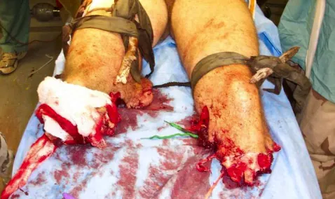
立即（Immediate）傷患範例原簡報 p.8 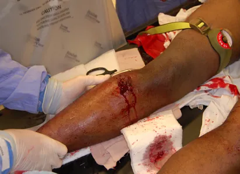
延後（Delayed）傷患範例原簡報 p.9 輕傷（Minimal）傷患範例原簡報 p.10 # 傷患分類與標示 Sorting and Tagging Casualties 整體分流：快速判定傷患的初始檢傷分類 Global Sorting: Quickly identify the initial triage category of casualties
「聽得到我聲音、能走的人，到這邊來。其他人大聲喊出來、舉手。」
“If you can walk to the sound of my voice, go here. Everyone else yell out, raise your hand”.
以 MARCH 進行快速創傷評估 Conducting a rapid trauma assessment using MARCH
M ：目視掃過出血，需要時上止血帶
Visual blood sweep and tourniquet application if needed
A ：擺正呼吸道，評估是否需呼吸道處置（聲門上或外科）
Position airway and assess need for airway intervention (supraglottic or surgical)
R ：評估呼吸速率、節律與品質
Assess rate, rhythm, and quality of respirations
C ：檢查橈動脈或頸動脈脈搏
Check radial or carotid pulse
＊這不是完整的 MARCH 評估，僅是供檢傷用的快速評估 This is not a full MARCH assessment, only a rapid assessment for triage
# 傷患分類與標示（續）：START
整體分流：能行走的傷患移至指定區域
Global sort: walking casualties move to the designated area.
START：依序評估呼吸、灌流、意識狀態
START: assess breathing, perfusion, then mental status.
無呼吸：重新擺正呼吸道。仍無呼吸：死亡。擺正後有呼吸：立即
Apneic: reposition airway. Still apneic: Deceased. Breathing after repositioning: Immediate.
呼吸 > 30 次／分：立即。否則評估灌流
Respirations >30/min: Immediate. Otherwise assess perfusion.
無橈動脈脈搏或微血管回充 > 2 秒：立即。否則評估意識
No radial pulse or capillary refill >2 seconds: Immediate. Otherwise assess mental status.
無法遵從指令：立即。可遵從指令：延後
Cannot follow commands: Immediate. Can follow commands: Delayed.
# 檢傷分類並非固定不變！ Triage categories are not permanent!
病患表現、生命徵象惡化、治療與環境因素，都會使傷患在分類間變動
Patient presentation, deteriorating vitals, treatments, and environmental factors will cause patients to move between triage category
檢傷分類 ≠ 後送分類
Triage Category ≠ Evacuation Category
對任何創傷病患，後送都是最高優先
Evacuation is the highest priority for any trauma patient
後送順序應優先需要更高層級照護的傷患
Evacuation order should prioritize patients who need a higher level of care
例題：誰先後送？ Who goes first?
膝下截肢，已用止血帶控制出血；P 110、R 18、SpO2 94
Below the knee amputation, bleeding controlled with TQ — P:110, R:18, SpO2:94
胸部槍傷，無出口；P 100、R 22、SpO2 88
Gunshot wound to chest, no exit wound — P:100, R:22, SpO2:88
# 傷患集結點 Casualty Collection Point （原簡報第 15–19 頁為傷患集結點配置圖片，無文字內容。）
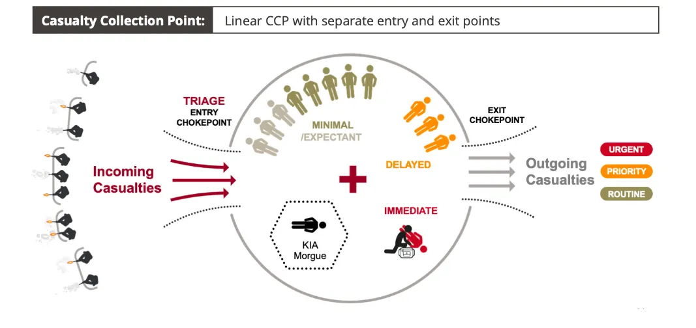
傷患集結點配置：直線型原簡報 p.15 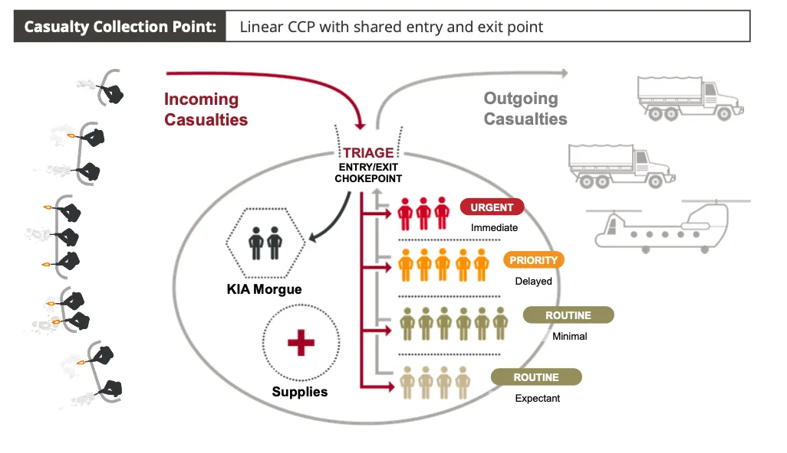
傷患集結點配置：圓形原簡報 p.16 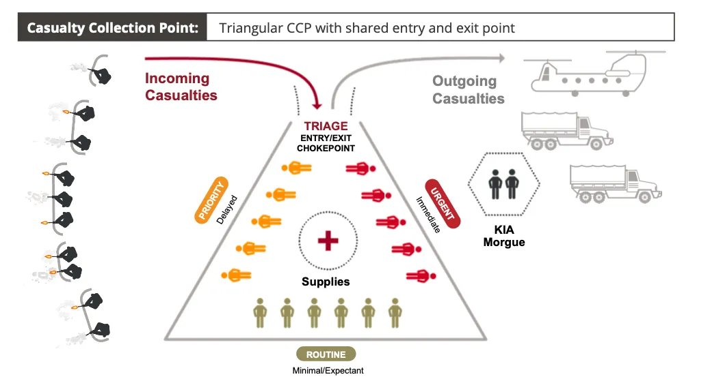
傷患集結點配置：三角形原簡報 p.17 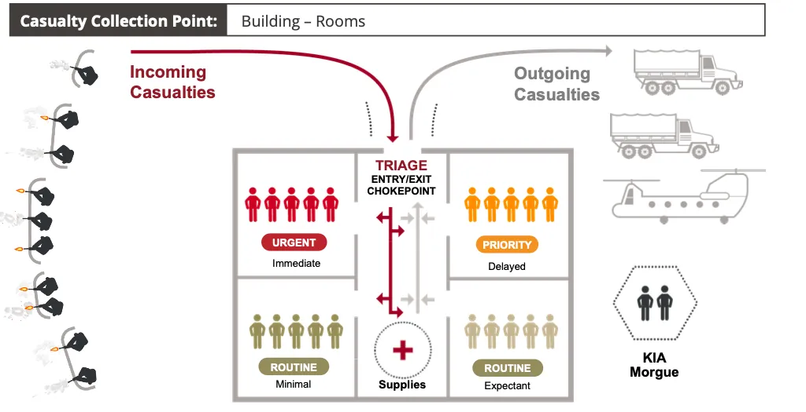
傷患集結點配置：建築物內（房間）原簡報 p.18 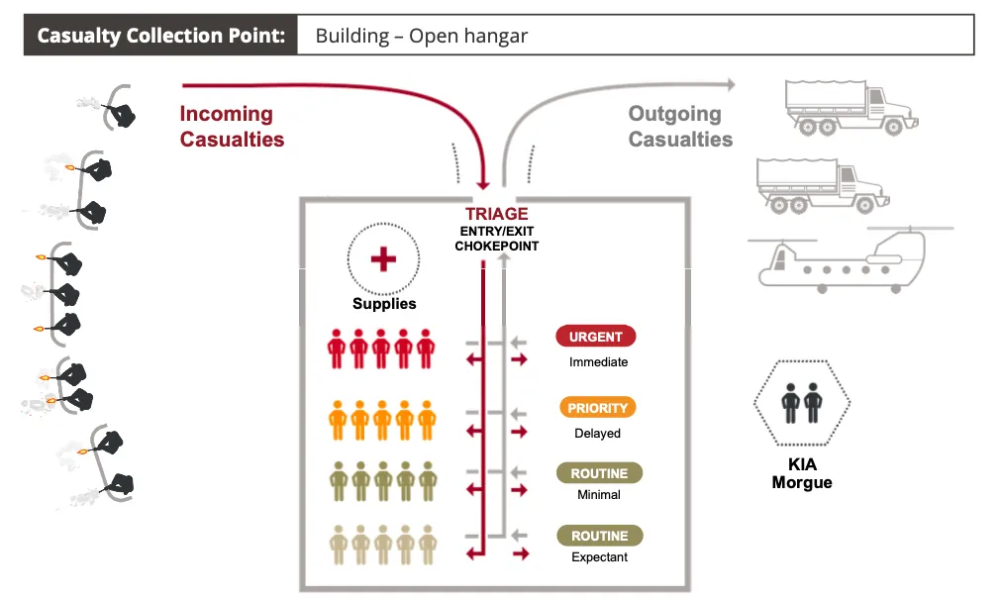
傷患集結點配置：建築物內（開放空間）原簡報 p.19 # 檢傷分類的視覺標記 Visual Markers for Triage Category 標記旗或螢光棒（夜間以螢光棒最佳） Marker flags or chemlights (*Chemlights best at night)
立即：紅旗或紅色螢光棒 Immediate: Red flag or chemlight
延後：橙／黃旗或橙／黃色螢光棒 Delayed: Orange/Yellow flag or chemlight
輕傷：綠旗或綠色螢光棒 Minimal: Green flag or chemlight
期待：黑旗或藍色螢光棒 Expectant: Black flag or Blue chemlight
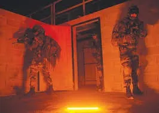
夜間以螢光棒標記原簡報 p.20 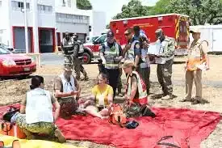
日間以標記旗標記原簡報 p.20 # MCI 資源盤點 Inventory of Resources for MCI 有效的管理始於盤點所有資源——對資源也要檢傷。Effective management begins with an inventory of all resources – triage your resources
人員（醫療與非醫療） Personnel (medical & non-medical)
時間（距離惡化、補給、後送） Time (until deterioration, resupply, evacuation)
空間（遮蔽處、檢傷區） Space (shelter, triage areas)
裝備與耗材（掌握現有品項） Equipment & supplies (know what’s available)
後送資源（時程與容量） Evacuation assets (timelines & capacity)
# 嚴苛環境下的 MCI MCI in an Austere Environment 要在長時間內正確提供照護，必須：To accurately provide care over a prolonged duration you must:
集中耗材（醫療包、CLS 套件、IFAK）
Consolidate supplies (med bags, CLS kits, IFAKs)
找出額外需求，及早申請補給
Identify additional needs, request resupply early
避免將資源浪費在無法存活的傷患上
Avoid wasting resources on non-survivable patients
建立病患照護計畫，預先設想病患需求
Create a patient care plan and anticipate patient needs
及早啟動遠距醫療
Initiate telemedicine early
# 病患照護計畫 Patient Care Plan
照護計畫應依傷勢預先設想病患需求
Patient care plans should anticipate patient needs based on injury
主動而非被動
Be proactive not reactive
依現有資源（低、較佳、最佳）決定
Informed by available resources (good, better, best)
在照護者執業範圍內可執行
Manageable within providers scope of practice
以下情況及早啟動遠距醫療：可能需要進階處置、懷疑敗血症、病患惡化
Initiate telemedicine early: If advanced procedures may be warranted; Sepsis is suspected; Patients deteriorate
# 遠距醫療 Telemedicine （原簡報此頁為圖片。）
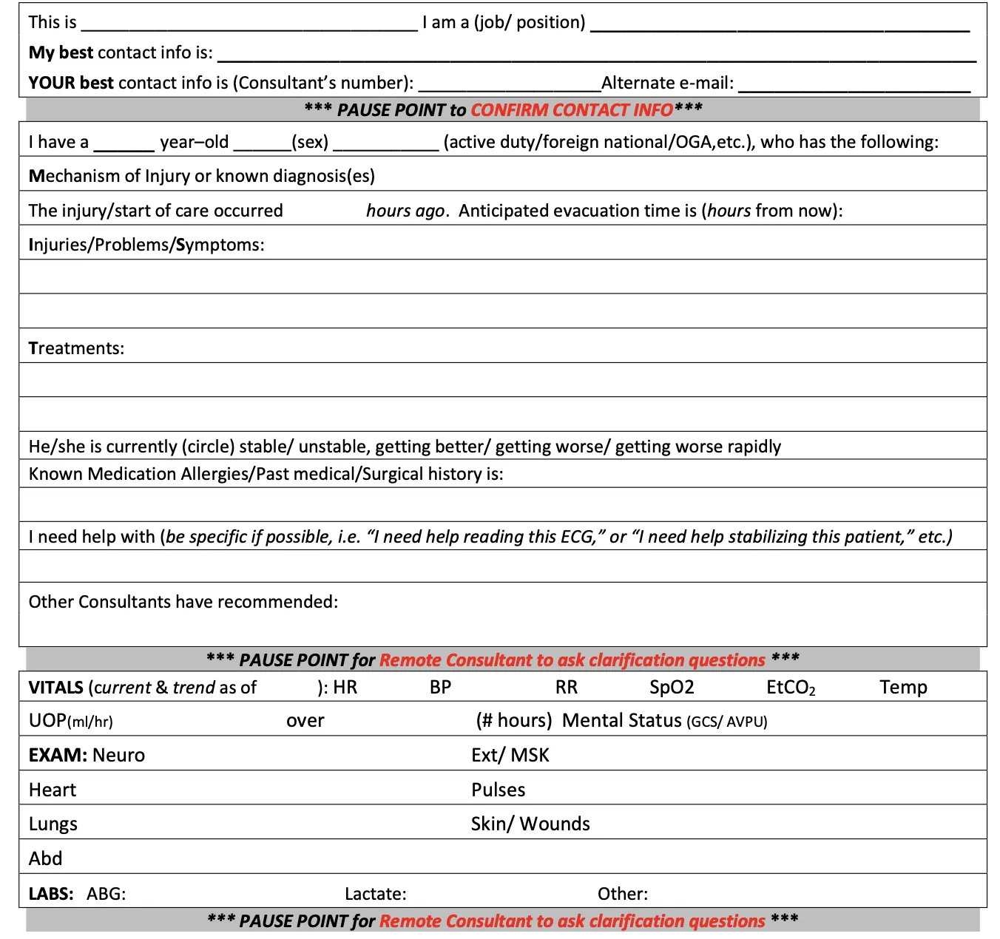
遠距醫療諮詢範本原簡報 p.24 # 固定醫療設施內的 MCI MCI in Fixed Medical Facility 挑戰 Challenges ：病患量、高照護標準、設施並非為 MCI 設計、人員召回
Patient volume, High standard of care, Facilities not designed for MCI, Staff recall
可提供的關鍵資源 Provides Essential Resources ：損害控制手術、進階影像、加護照護、醫療後勤支援、額外醫療人員
Damage control surgery, Advanced imaging, Intensive care, Medical logistical support, Additional medical providers
# 工作休息輪替 Work Rest Cycle
所有傷患穩定後才開始工作休息輪替
Initiate work rest cycles once all patients have been stabilized
理想上將不同執業範圍的人員配對（如 EMT-P 搭配非醫療人員）
Ideally pair responders of differing scopes of practice (EMT-P + non-medical person)
每位傷患身邊留下照護計畫供參考
Leave patient care plan with each patient for reference
包含常見問題（疼痛、呼吸道、呼吸器）的排除步驟
Include trouble shooting steps for common problems (pain, airway, ventilator)
包含可量化的叫醒條件：HR > 100、RR > 20、BP < 100
Include quantifiable wake up criteria: HR > 100, RR > 20, BP < 100
# 危機照護標準 Crisis Standards of Care
因需求暴增而改變標準醫療照護
The shift in standard medical care due to overwhelming demands
從個人照護 → 為最多人謀最大利益
Shift from individual care → greatest good for greatest number
非醫療人員可執行醫療任務，是戰力倍增器
Non-medical personnel may perform medical tasks, they are force multipliers
# MCI 的道德與倫理影響 Moral and Ethical Implications of MCI
照護標準改變 Shift in standards of care
生死決策帶來的道德傷害 Moral injury from life-or-death decisions
在存活與資源保存之間取捨 Balancing survival vs resource conservation
物資有限下的疼痛管理困境 Pain management challenges in limited supply
# MCI 決策點 MCI Decision Points
威脅已解除？ Threat neutralized?
傷患總數？ Total number of casualties?
資源限制？ Resource limitations?
照護需求是否超過能力？ Do care needs exceed capabilities?
傷患能否移動或協助？ Can casualties move or personnel assist?
能否後送？ Evacuation possible?
預計要在此停留多久？ How long do I expect to be here?
回報狀態 Communicate status
# MCI 規劃 MCI Planning
避免把 PCC 當成主要計畫，而是列為應變計畫
Avoid categorizing PCC as a primary plan; Include PCC as a contingency plan
針對醫療能量被壓垮的情境進行訓練
Train for medical capacity to be overwhelmed
指揮官必須參與所有階段
Commanders must be involved in all stages
後勤補給考量 Considerations for Logistics Resupply
規劃補給選項並加以演練
Plan resupply options and practice them
可能需要非常規方式：空投補給、快速補給包／預置物資、在地採購
May require unconventional methods: Aerial resupply; Speedballs / caches; Local procurement
# 檢傷取決於資源 Triage depends on resources
傷勢範例可作為檢傷參考，但不會自動決定分類
Injury examples inform triage, but do not automatically assign a category.
隨資源、後送可及性與傷患狀態改變，重新評估優先順序
Reassess priorities as resources, evacuation access, and casualty condition change.
「三度燒傷 > 70% 列為期待」的例子是假設資源嚴重受限；討論時請說明這些限制（JTS）
The >70% third-degree-burn Expectant example assumes severe resource constraints. State those constraints when discussing it. (JTS)
上一章 02 PCC 裝備配置下一章 04 HHHITMAN 延長護理口訣
本章小節（8） 酸中毒 創傷中的酸中毒 酸中毒的後果 低體溫：分級方式很重要 低體溫的原因 低體溫的後果 凝血病變 低血鈣 譯註：致命菱形指酸中毒、低體溫、凝血病變、低血鈣四者。
# 酸中毒 Acidosis
無氧代謝的副產物（乳酸）
By product of anaerobic metabolism (lactic Acid)
氫離子濃度上升，導致血液 pH 值下降
Increase in hydrogen ion concentration, causing a decrease in blood pH
酸中毒的類型 Types of Acidosis
呼吸性酸中毒：由氣體交換障礙引起
Respiratory acidosis: Caused by impaired gas exchange
代謝性酸中毒：由酸產生增加或碳酸氫根降低引起
Metabolic acidosis: Caused by increased acid production or decreased bicarbonate levels
# 創傷中的酸中毒 Acidosis in Trauma
各種休克 Any form of shock
組織灌流不足 Tissue hypoperfusion
呼吸衰竭 Respiratory Failure
腎臟／代謝功能受損 Impaired renal/ metabolic function
# 酸中毒的後果 Consequences of Acidosis 心血管 Cardiovascular
心輸出量與動脈血壓下降
Decrease cardiac output and arterial blood pressure
心血管對兒茶酚胺的反應減弱
Decreased cardiovascular response to catecholamines
發生心室顏動的閾值降低
Reduced threshold for developing V fib
肺部 Pulmonary
過度換氣
呼吸肌力量下降、疲勞增加
Decreased strength and increased fatigue of respiratory muscles
腦 Brain ：意識狀態下降 Decreased mental status
出血 Bleeding ：凝血因子與血小板形成血塊的功能下降 Decreased function of coagulation factors and platelets to make clot
# 低體溫：分級方式很重要 Hypothermia: classification matters
環境性分級（SOATP）：輕度 32–35°C、中度 28–32°C、重度 < 28°C
Environmental staging (SOATP): Mild 32-35°C, moderate 28-32°C, severe <28°C
創傷誘發的分級是另一套標準（JTS）：輕度 34–36°C、中度 32–34°C、重度 < 32°C
Trauma-induced staging is a distinct classification (JTS): Mild 34-36°C, moderate 32-34°C, severe <32°C
記錄嚴重度時要註明使用哪一套分級
Name the classification when documenting severity.
# 低體溫的原因 Causes of Hypothermia
暴露於寒冷環境 Exposure to cold
失血 Blood loss
創傷性腦損傷 TBI
休克 Shock
體溫調節受損：創傷常使身體無法調節體溫
Impairment of thermoregulation: Trauma often results in the body unable to regulate body temp
# 低體溫的後果 Consequence of Hypothermia 心血管 Cardiovascular
心輸出量下降、心肌缺血
Decrease cardiac output and myocardial ischemia
心血管對兒茶酚胺的反應減弱
Decrease cardiovascular response to catecholamines
組織氧氣輸送受損
Impaired tissue oxygen delivery
心律不整：心房顏動、心室顏動
出血 Bleeding ：凝血因子與血小板功能下降 Decrease function of coagulation factors and platelets
感染 Infection
白血球數量與功能下降
Decrease number and function of white blood cells
傷口感染、肺炎與敗血症風險增加
Increase risk of wound infection, pneumonia, and sepsis
# 凝血病變 Coagulopathy
指影響身體凝血能力的疾患
Refers to the disorders that affect the body’s ability to clot blood
失血會造成凝血因子流失
Loss of blood results in loss of clotting factors
凝血病變的原因 Causes of Coagulopathy ：大量出血、組織損傷、稀釋性凝血病變、低體溫、酸中毒、低血鈣
Massive hemorrhage, Tissue injury, Dilutional coagulopathy, Hypothermia, Acidosis, Hypocalcemia
凝血病變的後果 Consequences of Coagulopathy ：出血失控、內出血、器官損傷、休克、組織缺氧
Uncontrolled bleeding, Internal hemorrhaging, Organ damage, Shock, Tissue hypoxia
# 低血鈣 Hypocalcemia
離子鈣與總鈣要分開判讀，並標明單位與當地參考值
Interpret ionized and total calcium separately, with units and local reference ranges.
判讀前先確認數值是離子鈣還是總鈣
Identify whether the result is ionized or total calcium before interpreting it.
依適用的臨床流程處理，不要使用未標明的閾值
Use the applicable clinical protocol rather than an unlabeled threshold.
創傷經驗性劑量：氯化鈣 1 g 或 葡萄糖酸鈣 3 g（SOATP）
Empiric trauma dose: 1 g calcium chloride OR 3 g calcium gluconate. (SOATP)
低血鈣的原因 Causes of Hypocalcemia ：失血、輸血、大範圍組織損傷
Blood loss, Blood transfusion, Massive tissue damage
低血鈣的後果 Consequences of Hypocalcemia ：凝血功能受損、肌肉功能異常、心臟功能受損、血管張力下降
Impaired coagulation, Muscle dysfunction, Cardiac impairment, Decrease vascular tone
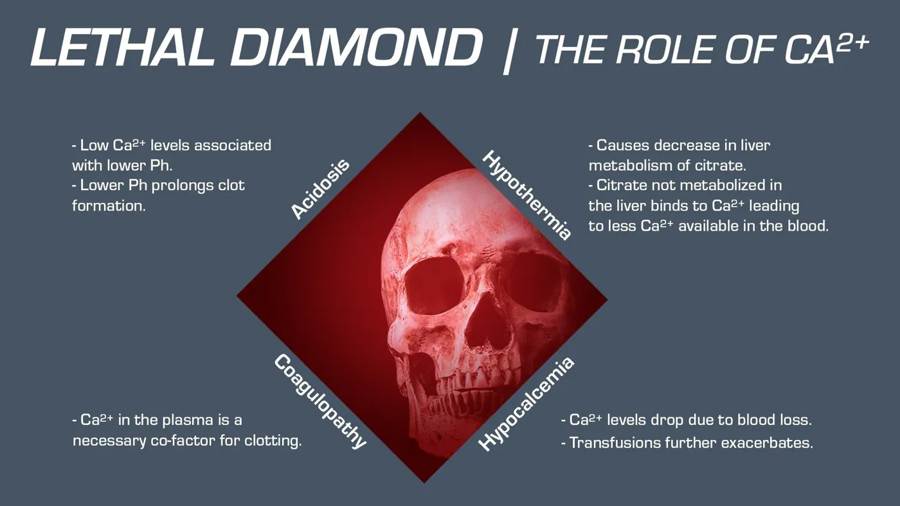
致命菱形：鈣的角色原簡報 p.15 上一章 05 PCC 期間的持續作業考量下一章 07 PCC 中的休克處置
07 PCC 中的休克處置 Shock Management in PCC
本章小節（15） 大綱 休克的定義 休克類型 休克的徵象與症狀 治療 休克處置目標 復甦反應 致命三角 傳明酸（TXA） 損害控制復甦 全血（續） 輸血不良反應 損害控制復甦中的鈣 PCC 中的走動血庫考量 輸血反應的重新評估 # 大綱 Overview
休克的定義 Shock Defined
徵象與症狀 Signs and Symptoms
治療 Treatment
休克處置目標 Goals of Shock Management
復甦反應 Resuscitation Response
PCC 中的損害控制復甦 Damage Control Resuscitation in PCC
# 休克的定義 Shock Defined 細胞與組織缺氧，導致器官損傷，若未治療將死亡。Cellular and tissue hypoxia leading to organ damage and, if not treated, death
低血容性（容積不足）：大量出血或燒傷
Hypovolemic (volume deficit): Massive hemorrhage or burns
心因性（幫浦衰竭）：心肌梗塞
Cardiogenic (pump failure): Myocardial infarction
阻塞性（阻塞）：大片肺栓塞
Obstructive (blockage): Massive pulmonary embolism
分布性（血管張力喪失）：敗血症或過敏性休克
Distributive (loss of tone - vasculature): Sepsis or anaphylaxis
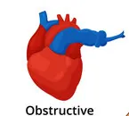
阻塞性原簡報 p.3 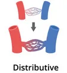
分布性原簡報 p.3 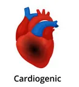
心因性原簡報 p.3 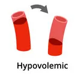
低血容性原簡報 p.3 # 休克類型 Types of Shock 低血容性 Hypovolemic
循環系統內體液不足
Low fluid volume in the circulatory system
由失血、脱水或燒傷造成
Caused by blood loss, dehydration, or burns
戰場上最常見的原因是大量出血（出血性休克）
Most common cause on the battlefield is massive hemorrhage (hemorrhagic shock)
心因性：心臟無法有效打出血液 Cardiogenic: failure of the heart to effectively pump
心肌梗塞（心臟病發作）或鈍性心臟損傷
Myocardial infarction (heart attack) or blunt cardiac injury
酸中毒、高血鉀或觸電引起的心律不整
Arrhythmias caused by acidosis, hyperkalemia, or electrocution
感染
阻塞性：外在因素妨礙心臟打血 Obstructive: external impairment of the heart to pump blood
心包填塞：心包腔內有血液或積液
Cardiac tamponade: blood or fluid in the pericardial space
張力性氣胸：空氣困在胸膜腔內，影響心臟功能
Tension pneumothorax: air is trapped in the pleural space compromising cardiac function
肺栓塞：血塊（栓子）阻塞肺動脈，使部分肺部血流減少，常由深部靜脈血栓（DVT）造成
Pulmonary embolism: blood clot (embolus) blocks a pulmonary artery reducing blood flow to part of the lung. Often caused by Deep Vein Thrombosis (DVT)
分布性：與血管張力喪失有關 Distributive: related to loss of vascular tone
敗血性：由全身性感染引起 Septic: caused by a systemic infection
過敏性：由嚴重過敏反應引起 Anaphylactic: caused by severe allergic reaction
神經性：由脊髓損傷引起 Neurogenic: caused by spinal cord injury
低血容性休克原簡報 p.4 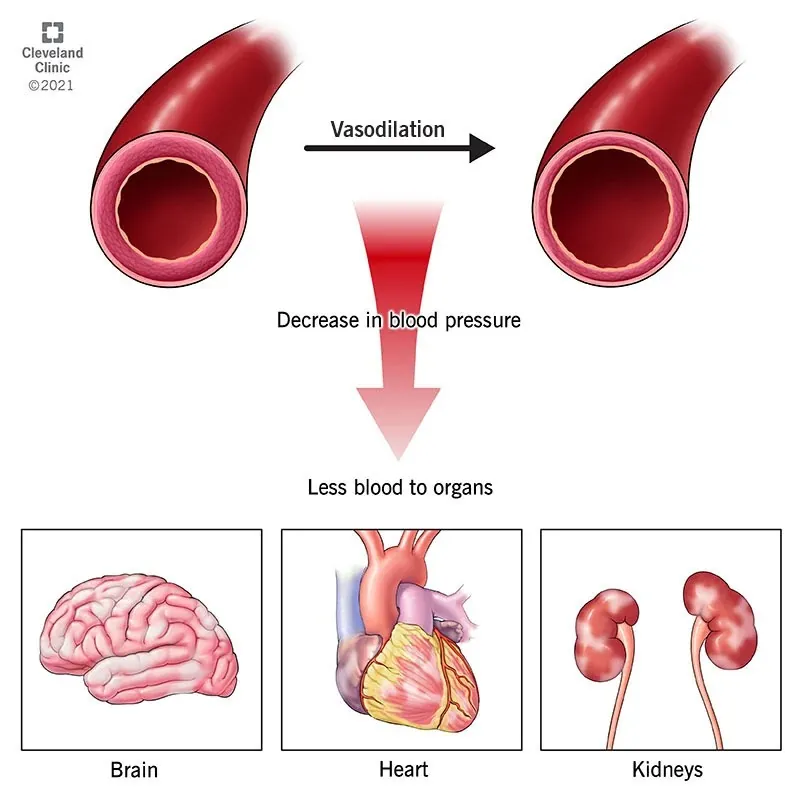
分布性休克：血管擴張使器官灌流下降原簡報 p.7 # 休克的徵象與症狀 Signs and Symptoms of Shock
心搏過速（HR > 100） Tachycardia (HR > 100)
呼吸急促（RR > 20） Tachypnea (RR > 20)
低血壓（SBP < 100） Hypotension (SBP <100)
意識狀態改變 Altered Mental Status
微血管回充變差（發紺） Decreased capillary refill (Cyanosis)
少尿／無尿（尿量 < 0.5 mL/kg/hr） Oliguria/anuria (Urine Output < .5mL/kg/Hour)
冒冷汗 Diaphoresis
戰術野戰照護（暖區）中的可靠指標：意識狀態改變、橈動脈脈搏微弱或消失
Reliable Indicators in Tactical Field Care (Warm Zone): Altered Mental Status; Weak or absent radial pulses
# 治療 Treatment
低血容性休克：止血，出血者採損害控制復甦（DCR）
Hypovolemic shock: control bleeding and use DCR for hemorrhage.
晶體液用於適當的非出血性適應症
Use crystalloid for the appropriate nonhemorrhagic indication.
心因性休克：評估幫浦衰竭與肺水腫；避免不分情況大量給液
Cardiogenic shock: assess pump failure and pulmonary edema; avoid unqualified fluid loading.
分布性休克：針對過敏或敗血症等病因治療
Distributive shock: cause-specific treatment for anaphylaxis or sepsis.
阻塞性休克：找出並處理病因，包括張力性氣胸
Obstructive shock: identify and treat the cause, including tension pneumothorax.
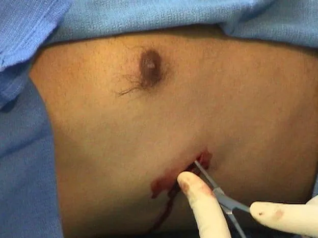
張力性氣胸針刺減壓原簡報 p.9 # 休克處置目標 Goals of Shock Management
出血性休克的終點：意識改善、摸得到橈動脈
Hemorrhagic shock endpoints: improved mental status and a palpable radial pulse.
PCC 收縮壓目標：> 90–100 mmHg（SOATP）
PCC SBP target: >90-100 mmHg. (SOATP)
TBI 會改變終點：PCC 目標 SBP > 110 mmHg（SOATP）
TBI changes the endpoint: PCC targets SBP >110 mmHg. (SOATP)
現行初期 TCCC 的 TBI 目標：SBP > 100 mmHg
Current initial TCCC TBI target: SBP >100 mmHg.
依適應症與照護階段選擇終點
Choose the endpoint for the indication and phase of care.
追蹤生命徵象與尿量趨勢；重新評估休克原因
Trend vital signs and urine output; reassess the cause of shock.
# 復甦反應 Resuscitation Response
有反應：病患生理指標改善
Responder: Patient demonstrates physiological improvements
短暫改善：初期改善後又惡化
Improves briefly: initial improvement followed by deterioration
未改善：充分復甦後仍持續惡化
Does not improve: continued deterioration despite adequate resuscitation
＊若病患為暫時反應或無反應，重新評估所有止血措施，可行時做 E-FAST，並考慮其他休克類型（阻塞性、心因性、分布性）。
*If patient is transient or non-responder, re-assess all forms of hemorrhage control, conduct E-FAST if available, consider other types of shock (obstructive, cardiogenic, distributive)
# 致命三角 Lethal Triad
低體溫 ：寒冷會損害凝血並增加復甦風險
Hypothermia: Cold impairs coagulation and increases resuscitation risk.
凝血病變 ：血塊形成受損使出血惡化
Coagulopathy: Impaired clot formation worsens hemorrhage.
酸中毒 ：酸血症損害凝血。不要以 pH 6.8 作為治療閾值
Acidosis: Acidemia impairs coagulation. Do not use pH 6.8 as a treatment threshold.
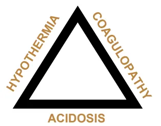
致命三角原簡報 p.12 # 傳明酸（TXA） Tranexamic Acid
TXA 2 g 緩慢靜脈／骨內注射，越快越好，須在受傷後 3 小時內
2 g TXA slow IV/IO as soon as possible, within 3 hours of injury.
初期 TCCC 適應症：可能需要輸血（休克、重大截肢、軀幹穿刺傷或嚴重出血），或顯著 TBI／爆炸或鈍傷相關的意識改變
Initial TCCC indications: likely blood transfusion (shock, major amputation, penetrating torso trauma or severe bleeding), OR significant TBI / blast- or blunt-associated altered mental status.
不要等到出現晚期顱內壓上升徵象
Do not wait for late increased-ICP signs.
TXA 減少血塊分解，但不能取代止血或輸血復甦
TXA reduces clot breakdown; it does not replace hemorrhage control or blood resuscitation.
依本流程，超過 3 小時不要開始給予
Do not initiate beyond 3 hours under this protocol.
# 損害控制復甦 Damage Control Resuscitation PCC 血品優先順序（SOATP） PCC product priority (SOATP)
冷藏低效價 O 型全血 Cold-stored low-titer O whole blood
新鮮全血（SOLO／WBB） Fresh whole blood (SOLO/WBB)
成分血 1:1:1；無血小板時 1:1 Components 1:1:1; 1:1 if platelets unavailable
凍乾血漿 Freeze-dried plasma
及早止血並以血品復甦
Use early hemorrhage control and blood-product resuscitation.
初期 TCCC：冷藏 LTOWB → 預先篩檢的低效價 O 型新鮮全血 → 1:1:1 → 1:1 → 單用血漿或紅血球。每輸一單位後重新評估
Initial TCCC: cold-stored LTOWB, pre-screened low-titer O fresh whole blood, 1:1:1, 1:1, then plasma or RBCs alone. Reassess after each unit.
晶體液不等同於出血性復甦
Crystalloid is not equivalent hemorrhagic resuscitation.
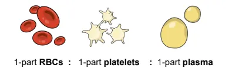
成分血 1:1:1原簡報 p.14 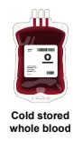
冷藏全血原簡報 p.14 # 全血（續） Whole Blood Continued 緊急全血優先順序（SOATP） Emergency whole-blood priority (SOATP)
低效價 O 型全血（LTOWB） Low-titer O whole blood (LTOWB)
A 型病患給 A 型新鮮血；其他人給 LTOWB Group A fresh blood for group A patients; LTOWB for others
同型全血 Group-specific whole blood
效價未知的 O 型全血 Unknown-titer group O whole blood
依單位 SOLO／ASBP 流程，另行確認相容性與捐血者篩檢
Check compatibility and donor screening separately using the unit SOLO/ASBP process.
初期 TCCC：未篩檢的新鮮全血需由受過適當訓練的醫療人員指示
Initial TCCC: unscreened fresh whole blood requires direction from an appropriately trained medical provider.
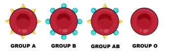
ABO 血型原簡報 p.15 # 輸血不良反應 Adverse Reactions 急性溶血反應 Acute hemolytic reaction ：疼痛、發燒、深色尿液或生命徵象不穩 Pain, fever, dark urine, or instability
立即停止輸血
Immediately stop the transfusion.
以生理食鹽水維持靜脈通路並更換管路
Maintain IV access with NS and change tubing.
Epinephrine 0.5 mg IM，及 diphenhydramine 50 mg IM/IV/IO（SOATP）
Epinephrine 0.5 mg IM and diphenhydramine 50 mg IM/IV/IO. (SOATP)
請求遠距醫療並支持灌流
Consult telemedicine and support perfusion.
過敏性休克 Anaphylaxis ：呼吸道症狀、蕁麻疹、低血壓 Airway symptoms, hives, hypotension
立即停止輸血
Immediately stop the transfusion.
Epinephrine 0.5 mg IM（1 mg/mL 取 0.5 mL）（SOATP）
Epinephrine 0.5 mg IM (0.5 mL of 1 mg/mL). (SOATP)
支持呼吸道、氧合與循環
Support airway, oxygenation, and circulation.
依過敏性休克流程處理並監測反應（SOATP）
Follow the anaphylaxis protocol and monitor response. (SOATP)
# 損害控制復甦中的鈣 Calcium in Damage Control Resuscitation
劑量：氯化鈣 1 g 或 葡萄糖酸鈣 3 g IV/IO（SOATP）
Dose: 1 g calcium chloride OR 3 g calcium gluconate IV/IO. (SOATP)
儘速給予，不必等待輸血
Give promptly without waiting for blood administration.
每輸 4 單位血後重複一次
Repeat after every 4 units of blood.
周邊靜脈建議用葡萄糖酸鈣（SOATP）
Calcium gluconate is preferred for peripheral IV use. (SOATP)
氯化鈣外滇可能造成組織損傷
Chloride extravasation can cause tissue injury.
藥物與血品之間使用獨立管路或先沖管
Use a separate line or flush between medications and blood.
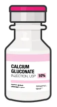
葡萄糖酸鈣 10%原簡報 p.17 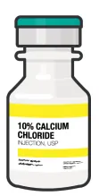
氯化鈣 10%原簡報 p.17 # PCC 中的走動血庫考量 Walking Blood Bank Considerations in PCC
可行時，各單位成員應預先篩檢 ABO 血型，O 型者加做效價檢測（每 90–120 天複檢）
When possible, members of each unit should be prescreened for ABO group and O group members should be titer tested (retest every 90-120 days)
應備妥 Eldon 卡或核准的 ABO 檢測套組，以備需要使用未篩檢捐血者的血液
Eldon Card or approved ABO test kits should be made available if the need arises to use blood from unscreened donor
捐一單位血後通常可安全歸隊。極端情況可捐兩單位，但依體型與體能，該捐血者可能需要後送
It is generally safe to return to duty after donating one unit of blood. Two units may be donated in extremis however, depending on size and physical fitness, that donor may need to be evacuated.
資源稀缺時，需審慎檢傷，將血品分配給最能受益的病患
When resources are scarce, deliberate triage is needed to allocate blood products to patients who will benefit most.
# 輸血反應的重新評估 Transfusion reaction reassessment
區分溶血、過敏性休克、發燒反應、TRALI 與 TACO
Differentiate hemolysis, anaphylaxis, febrile reactions, TRALI, and TACO.
發燒反應需先評估有無溶血，才考慮恢復輸血
A febrile reaction requires assessment for hemolysis before considering restart.
TRALI 需要氧合與通氣支持；TACO 需評估體液過負荷
TRALI requires oxygenation and ventilation support; TACO requires assessment of volume overload.
穩定後若仍需輸血，使用相容血品並擬定適當照護計畫
If transfusion remains necessary after stabilization, use compatible blood and an appropriate care plan.
上一章 06 致命菱形下一章 08 PCC 中的大量出血
本章小節（10） 大綱 內出血的風險 大量出血的部位 胸腔內出血（血胸） 骨盆內出血 腹腔內出血 長骨骨折 辨識內出血 延伸型創傷超音波重點評估（E-FAST） eFAST 的限制 # 大綱 Overview
未察覺內出血的風險 Risks with unrecognized internal hemorrhage
內出血的部位 Areas for internal hemorrhage
辨識內出血 Recognition of internal hemorrhage
E-FAST 檢查 E-FAST exam
# 內出血的風險 Risks of Internal Hemorrhage 死亡 Death
未治療的內出血可能導致死亡
Untreated internal hemorrhage can lead to death
初次 MARCH 評估時可能還看不到內出血徵象
Signs of internal hemorrhage may not be present during initial MARCH assessment
徵象與症狀可能數小時後才顯現
Signs and symptoms may take hours to be visually seen
耗損關鍵資源 Loss of vital resources
PCC 環境資源有限
Resources are limited in PCC setting
必須對病患與資源檢傷，為最多人做最多的好事
Patients and resources must be triaged to do most good for most people
# 大量出血的部位 Areas of Massive Hemorrhage
胸腔：血氣胸 Thoracic (chest) Cavity: Hemo Pneumothorax
腹部（及後腹膜）：鈍傷／穿刺傷 Abdomen (and retroperitoneum): Blunt/Penetrating Trauma
骨盆：車禍／墜落／爆炸 Pelvis: MVA/Falls/Blast
長骨：車禍／墜落／爆炸 Long bone: MVA/Falls/Blast
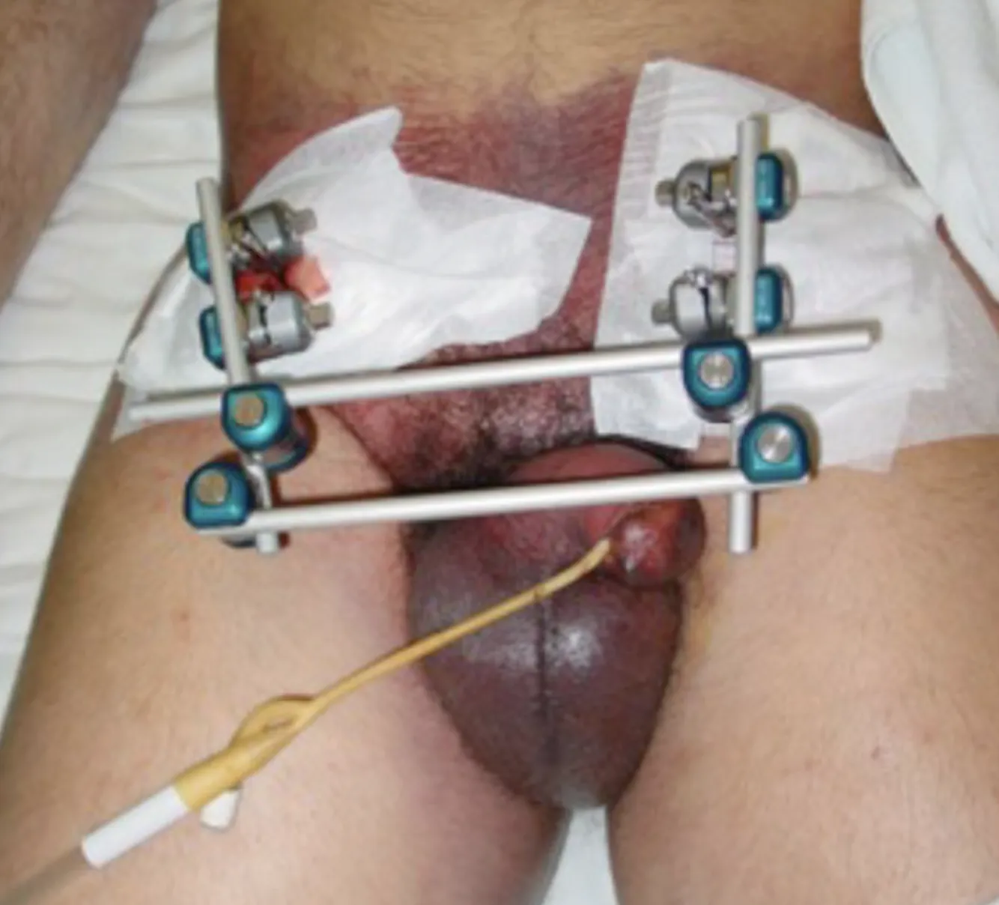
骨盆外固定原簡報 p.4 # 胸腔內出血（血胸） Internal Hemorrhage in the Chest (Hemothorax) 徵象與症狀 Signs & Symptoms ：呼吸急促、胸痛、呼吸音減弱／消失、心搏過速與低血壓、氣管偏移（張力性血胸）、E-FAST 陽性
Shortness of breath, Chest pain, Decreased/absent breath sounds, Tachycardia, hypotension, Tracheal deviation (tension hemothorax), Positive E-FAST
治療 Treatment
支持呼吸道與呼吸
Support airway and breathing
恢復血容量並止血
Restore blood volume and control hemorrhage
由受過適當訓練的人員進行胸腔引流
Chest drainage by an appropriately trained provider
開胸術需有外科能力及符合適應症
Thoracotomy requires surgical capability and indications
# 骨盆內出血 Internal Hemorrhage in the Pelvis 多為靜脈性出血，但也可能是動脈性。Often venous bleeding, but can be arterial
徵象與症狀 Signs & Symptoms ：骨盆不穩、雙下肢長度不等、會陰部瘀青、陰囊／陰唇腫脹、直腸出血、心搏過速／低血壓
Pelvic instability, Leg-length discrepancy, Perineal bruising, Scrotal/labial swelling, Rectal bleeding, Tachycardia/Hypotension
治療 Treatment
骨盆固定帶置於大轉子高度
Pelvic binder over greater trochanters
避免反覆操作骨盆
Avoid repeated pelvic manipulation
填塞伴隨的交界處出血
Pack associated junctional bleeding
輸血並重新評估
Transfuse blood and reassess
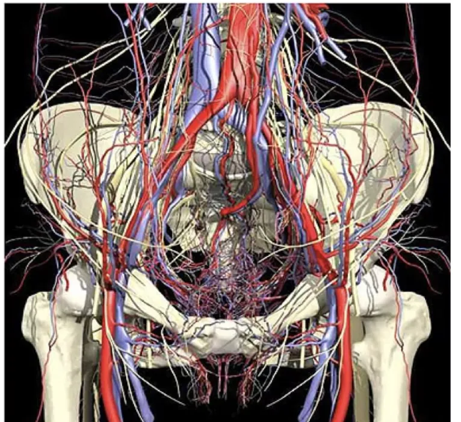
骨盆血管解剖原簡報 p.6 # 腹腔內出血 Internal Hemorrhage in the Abdomen 腹部內出血發生在兩個空間：Internal hemorrhage in the abdomen occurs in two spaces:
腹膜內：實質器官，最常見（脾臟或肝臟）
Intraperitoneal: Solid organs, most frequent (spleen or liver)
後腹膜：主動脈、下腔靜脈、腎臟或骨盆損傷
Retroperitoneum: Aorta, Inferior Vena Cava, kidney or pelvic injury
徵象與症狀 Signs & Symptoms ：心搏過速、低血壓、腹部膨脹或變硬、腰側或臍周瘀青（晚期徵象）
Tachycardia, hypotension; Abdominal distention or firmness; Flank or periumbilical bruising (late sign)
治療 Treatment
保守支持，可行時準備後送
Conservative support; Preparation for evacuation if possible
沒有外科能力時，很難處理腹腔／後腹膜大量出血
Management of massive abdominal/retroperitoneal hemorrhage without surgical capability is unlikely
# 長骨骨折 Long bone Fractures 徵象與症狀 Signs & Symptoms ：明顯變形、腫脹或瘀青；肢體縮短、旋轉；遠端脈搏消失或微弱
Obvious deformity, swelling, or bruising; Shortened, rotated limb; Absent or weak distal pulses
治療 Treatment ：骨折固定、直接加壓敷料、骨折復位、監測腔室症候群
Fracture Stabilization, Direct pressure dressing, Reduction of fracture, Monitor for compartment syndrome
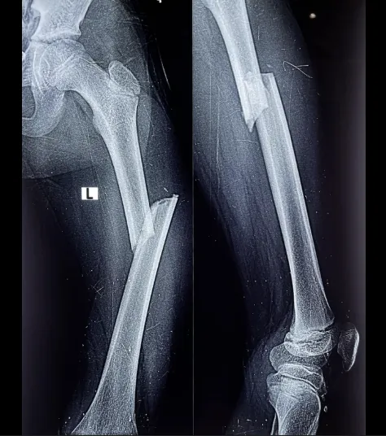
股骨骨折 X 光原簡報 p.8 # 辨識內出血 Recognition of Internal Hemorrhage 這類傷勢不易辨識，需要時間才會出現明確的理學發現。These injuries are not easily identifiable and take time to develop clear physical findings
依受傷機轉保持臨床懷疑 Clinical suspicion based on the mechanism of injury
系統性的病患評估 Systematic patient assessments
監測生命徵象 Monitoring vital signs
診斷影像 Diagnostic Imaging
# 延伸型創傷超音波重點評估（E-FAST） Extended Focused Assessment with Sonography for Trauma 原簡報第 10–16 頁為超音波影像，各頁標題如下：
E-FAST 陽性：心包填塞 Positive E-FAST: Cardiac Tamponade
E-FAST 陽性右上腹：莫里森氏袋／肝腎隙 Positive E-FAST RUQ: Morison’s pouch / Hepatorenal Recess
E-FAST 陽性左上腹：脾腎隙 Positive E-FAST LUQ: Splenorenal Recess
E-FAST 陽性恥骨上：游離液體 Positive E-FAST Suprapubic: Free Fluid
E-FAST 陽性：氣胸 Positive E-FAST Pneumothorax
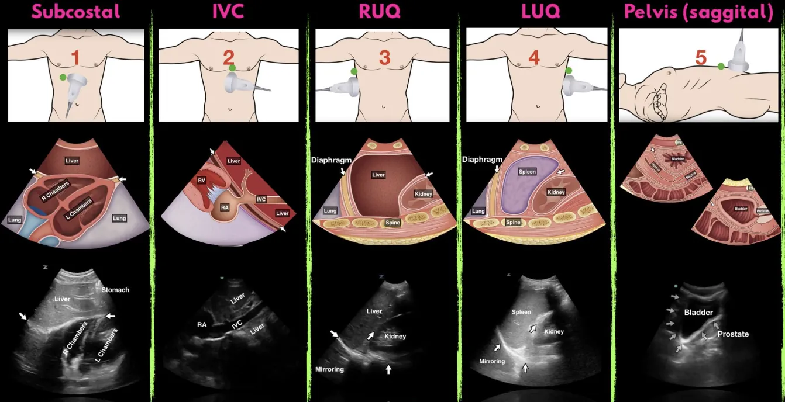
E-FAST 掃描位置原簡報 p.10 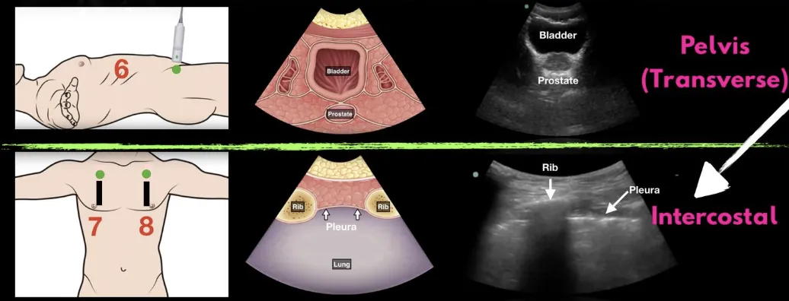
E-FAST 掃描位置（續）原簡報 p.11 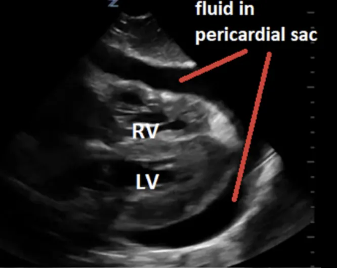
E-FAST 陽性：心包填塞原簡報 p.12 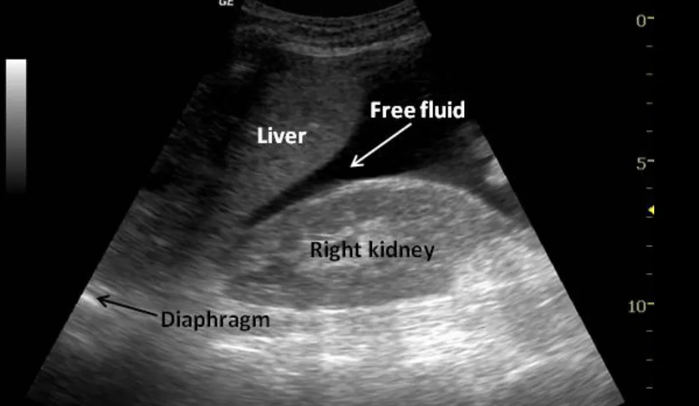
E-FAST 陽性右上腹：莫里森氏袋原簡報 p.13 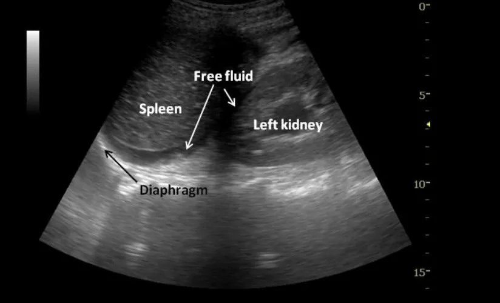
E-FAST 陽性左上腹：脾腎隙原簡報 p.14 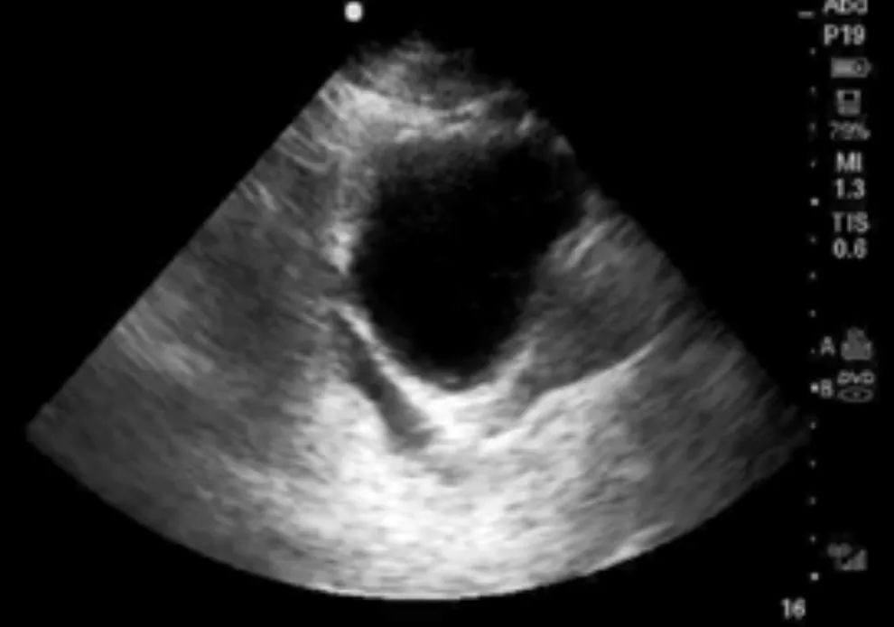
E-FAST 陽性恥骨上：游離液體原簡報 p.15 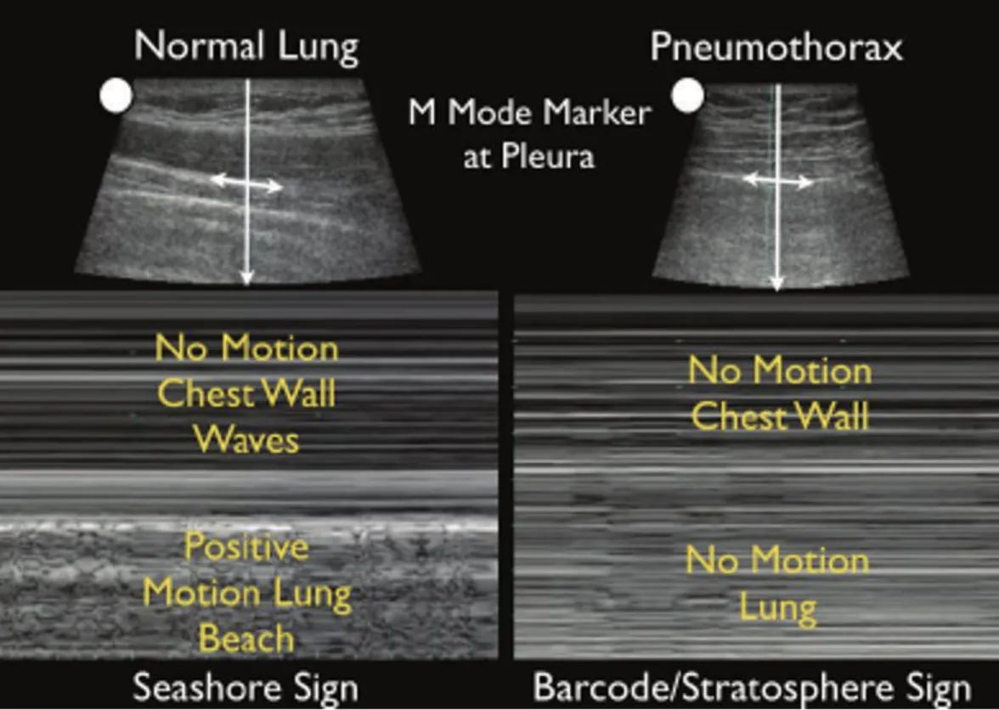
E-FAST 陽性：氣胸（M 模式）原簡報 p.16 # eFAST 的限制 eFAST limitations
eFAST 陰性不能排除內出血
A negative eFAST does not exclude internal hemorrhage.
若受傷機轉與臨床發現仍令人擔心，每 15–20 分鐘重做 FAST（SOATP）
If mechanism and clinical findings remain concerning, repeat FAST every 15-20 minutes. (SOATP)
FAST 陽性且生命徵象不穩的傷患，需緊急後送至外科
An unstable casualty with a positive FAST needs urgent surgical evacuation.
影像需搭配理學檢查與復甦反應一併判讀
Interpret scans alongside examination and response to resuscitation.
上一章 07 PCC 中的休克處置下一章 09 PCC 中的體溫調節
09 PCC 中的體溫調節 Thermoregulation in PCC
本章小節（10） 訓練大綱 PCC 中的低體溫 低體溫處置：最低配置 低體溫處置：較佳配置 低體溫處置：最佳配置 PCC 中的體溫過高 體溫過高的預防 熱衰竭 中暑（熱中風） 降溫措施 # 訓練大綱 Training Overview
PCC 中的低體溫 Hypothermia in PCC
低體溫處置 Hypothermia Management
PCC 中的體溫過高 Hyperthermia in PCC
熱衰竭 Heat Exhaustion
中暑（熱中風） Heat Stroke
降溫措施 Cooling Measures
# PCC 中的低體溫 Hypothermia in Prolonged Casualty Care
普遍威脅 ：低體溫在各種氣候都會發生，不只寒冷環境。低血容與潮濕環境風險很高
Universal Threat: Hypothermia occurs in all climates, not just cold environments. Hypovolemia and wet conditions create significant risk.
預防優先 ：在嚴苛環境中，預防比治療容易且有效得多
Prevention Priority: Prevention is significantly easier and more effective than treatment in austere environments.
加速因子 ：休克、濕衣物與接觸地面，會大幅加快傷患低體溫的發生
Accelerating Factors: Shock, wet clothing, and ground contact dramatically accelerate hypothermia onset in casualties.
關鍵影響 ：低體溫會加重凝血病變，提高創傷病患死亡率
Critical Impact: Hypothermia worsens coagulopathy and increases mortality in trauma patients.
關鍵影響 ：即使在炎熱天氣，失血也可能使體溫顯著下降
Critical Impact: Blood loss can cause a significant drop in body temperature, even in hot weather
# 低體溫處置：最低配置 Minimum Hypothermia Management
環境防護 ：用現有材料將傷患與地面、風與冷空氣隔絕
Environmental Protection: Insulate casualty from ground, wind, and cold air using available materials
保留裝備 ：處置期間盡量讓傷患穿著防護裝備
Preserve Equipment: Keep protective gear on casualty as much as possible during treatment
處理潮濕 ：可行時以乾衣更換濕衣；保溫並以不透水層包覆
Address Wetness: Replace wet clothing with dry clothing when possible; insulate and enclose in an impermeable barrier.
傷患仍能自行產熱時，被動復溫可改善輕度低體溫
Passive rewarming can help mild hypothermia when the casualty can generate heat.
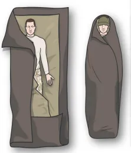
低體溫預防套件（HPMK）原簡報 p.4 # 低體溫處置：較佳配置 Better Hypothermia Management
系統升級 ：將傷患移入良好保溫系統：睡袋、防水氣層、熱源
System Upgrade: Transition casualty to well-insulated system: sleeping bag, vapor barrier, heat source
事前準備 ：搬動傷患前先備好保溫包裹，避免失溫
Preparation: Prepare insulated hypothermia enclosure before moving casualty to prevent heat loss
主動加溫 ：使用加溫設備。可行時讓傷患喝溫熱飲品。復甦時使用輸液加溫器
Active Warming: Use warming devices. If able, allow casualty to drink warm fluid. Utilize fluid warmer for resuscitation efforts
主動熱源放在前胸軀幹／腋下。避免直接接觸皮膚或繞著軀幹包紮
Active heat on anterior torso/axillae. Avoid direct skin contact or wrapping the torso.
復甦時過度加熱可能造成溶血
Excessive heat may cause hemolysis during resuscitation efforts
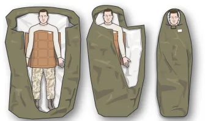
保溫包裹方式原簡報 p.5 # 低體溫處置：最佳配置 Best Hypothermia Management
系統升級 ：將傷患移入有持續熱源的良好保溫系統
System Upgrade: Transition casualty to well-insulated system with continuous heat source
控制環境 ：將傷患移入溫暖、可控溫的空間
Controlled environment: Move the casualty into a warm, temperature-controlled space.
持續主動加溫 ：使用加溫設備、溫熱靜脈輸液、電熱毯
Continuous Active Warming: Use warming devices, warm IV fluids, electric heating blankets
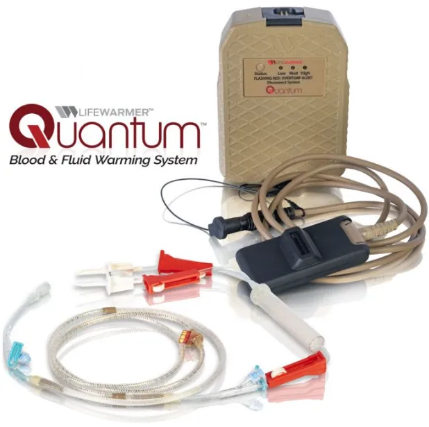
Quantum 血液與輸液加溫系統原簡報 p.6 Bair Hugger 熱風保溫毯原簡報 p.6 # PCC 中的體溫過高 Hyperthermia in Prolonged Casualty Care
發燒 ：下視丘設定點改變造成的體溫上升，通常由感染引起。可用退燒藥
Fever: Elevated temperature due to hypothalamic set-point change, typically caused by infection. Antipyretics indicated
體溫過高 ：由熱暴露與勞動造成，設定點未改變。禁用退燒藥
Hyperthermia: Elevated temperature without set-point change from heat exposure and exertion. Antipyretics contraindicated
關鍵區分 ：兩者治療方式截然不同，誤判可能致命
Critical Distinction: Treatment approaches are completely different. Misidentification can be fatal
# 體溫過高的預防 Hyperthermia Prevention
環境控制 ：提供遮陰、保持通風、移除多餘裝備，減輕傷患熱負荷
Environmental Control: Provide shade, ensure airflow, and remove excess gear to reduce heat burden on casualties
水分與營養 ：維持充足水分，提供含鹽食物以利體溫調節
Hydration & Nutrition: Maintain adequate hydration and provide food with salt to promote thermoregulation
活動管理 ：規劃規律休息，持續監測熱傷害早期徵兆
Activity Management: Plan regular rest cycles and continuously monitor for early signs of heat illness
# 熱衰竭 Heat Exhaustion 主要症狀：疲倦、頭痛、頭暈；噃心／嘔吐；心搏過速；體溫升高
Key Symptoms: Fatigue, headache, dizziness; Nausea/vomiting; Tachycardia; Elevated temperature
通常在休息、遮陰、口服補液與降溫後改善。Typically improves with rest, shade, oral fluids, and cooling measures
# 中暑（熱中風） Heat Stroke 關鍵徵象：中樞神經功能異常（意識混亂、共濟失調、癲癇、昏迷）；體溫過高且皮膚發熱（濕或乾）
Critical Signs: CNS dysfunction: confusion, ataxia, seizures, coma; Hyperthermia with hot skin (wet or dry)
中暑是需要快速處置的醫療急症。 Heat Stroke is a medical emergency which requires rapid intervention
# 降溫措施 Cooling Measures 最低配置 Minimum ：移至陰涼處、將傷患抬離高溫地面、搧風、弄濕衣物、可行時口服補液
Move to shade, Elevate patient off hot surface, Fan patient, Wet clothing, Oral fluids if able
較佳配置 Better ：弄濕傷患並主動搧風、將傷患移離該環境、冷靜脈輸液
Wet patient plus active fanning, Remove patient from environment, Cool IV fluids
最佳配置 Best ：浸水降溫、持續監測核心體溫
Water immersion, Continuous core temperature monitoring
目標：症狀出現後 30 分鐘內將核心體溫降至 38.8°C／102°F。
Target: reduce core temperature to 38.8 C / 102 F within 30 minutes of symptom onset
上一章 08 PCC 中的大量出血下一章 10 PCC 中的呼吸道處置
10 PCC 中的呼吸道處置 Airway Management in PCC
本章小節（10） 大綱 傷患呼吸道評估 基本呼吸道操作 甦醒球（BVM） 外科環甲軟骨切開術 外科環甲軟骨切開術（續） 氣管內插管 呼吸道控制的限制 呼吸道裝置問題排除 進階呼吸道能力 # 大綱 Overview
呼吸道評估 Airway Assessment
呼吸道控制的限制 Limitations in Airway control
在 PCC 中執行環甲軟骨切開術 Performing a Cricothyroidotomy in PCC
呼吸道裝置的問題排除 Troubleshooting an airway device
呼吸道評估頻率 Frequency for airway assessment
# 傷患呼吸道評估 Casualty Airway Assessment
看、聽、感覺 Look, Listen, Feel
呼吸費力程度 Work of Breathing
呼吸速率、節律與品質 Respiratory Rate, Rhythm, and Quality
尋找呼吸道阻塞徵象 Look for signs of airway obstruction
徵象與症狀 Signs & Symptoms ：呼吸困難、發紺、意識改變、疲倦、心搏過速、心搏過緩
Dyspnea, Cyanosis, Altered mental status, Fatigue, Tachycardia, Bradycardia
# 基本呼吸道操作 Basic Airway Maneuvers 適應症 Indications
意識喪失導致的呼吸道阻塞 Airway obstruction due to loss of consciousness
軟組織塌陷（舌頭） Soft tissue collapse (tongue)
清除分泌物 Clear secretions
限制 Limitations
只是暫時性 Temporary
無法防止吸入 No protection against aspiration
需持續監測 Requires constant monitoring
禁忌 Contraindications
懷疑頸椎損傷（改用推顎法） Suspected cervical spine injury (perform jaw thrust)
可能使阻塞惡化的嚴重顏面創傷 Massive facial trauma that might worsen obstruction
壓額抬下巴法與推顎法原簡報 p.4
# 甦醒球（BVM） Bag Valve Mask 適應症 Indications
尚無進階呼吸道的呼吸衰竭或停止 Respiratory failure or arrest without advanced airway
暫時性的氧合與通氣 Temporary oxygenation and ventilation
限制 Limitations
耗費人力，需熟練人員 Labor-intensive requiring skilled personnel
疲勞與技術差異 Fatigue and skill variability
併發症 Complication
胃部充氣 Gastric insufflation
必要通氣時設法減少 Mitigate during required ventilation
甦醒球面罩密合手法原簡報 p.5
# 外科環甲軟骨切開術 Surgical Cricothyroidotomy 適應症 Indications ：燒傷、腫脹、異物造成的嚴重上呼吸道阻塞 Severe upper airway obstructions due to burns, swelling, foreign body
技術困難 Technical difficulty
頸部受傷或解剖標誌消失 Neck injury or lost landmarks
需具備適當專業 Requires appropriate expertise
限制 Limitations
需持續照護與維護 Requires ongoing care and maintenance
可能耗費大量資源（抽吸、止痛） Can be resource intensive (suction, pain control)
外科環甲軟骨切開步驟原簡報 p.6
# 外科環甲軟骨切開術（續） Surgical Cricothyroidotomy cont.
對清醒、半清醒或對疼痛刺激有反應的病患，切開前考慮使用 lidocaine
Consider using lidocaine prior to surgical cricothyroidotomy in conscious or semi conscious patients, or patients with a response to painful stimuli
及早準備呼吸道套件
Prepare the airway kit early.
使用你受訓過的技術
Use the technique you are trained to perform.
備品：有氣囊的呼吸道管、手術刀與該技術專用輔具、可取得時備妥抽吸與消毒劑
Cuffed airway tube; Scalpel and technique-specific adjuncts; Suction and antiseptic when available
呼吸道緊急狀況需要有時間效率的計畫
An airway emergency requires a time-sensitive plan.
Bougie 輔助環甲軟骨切開原簡報 p.7
# 氣管內插管 Endotracheal Intubation 適應症 Indications
以呼吸道操作、聲門外呼吸道、鼻咽呼吸道處置失敗
Unsuccessful airway management with airway maneuvers, extraglottic airways, nasopharyngeal airways
熱傷或腐蝕性氣體吸入傷
Thermal or caustic gas injuries
限制 Limitations
經驗不足 Minimal experience
需要白光照明 White light requirements
題顏面部損傷 Maxillofacial injuries
難以辨識誤插食道 Difficulties recognizing esophageal intubation
氣管內插管原簡報 p.8 插管器材原簡報 p.8
# 呼吸道控制的限制 Limitations in Airway Control
環境限制 ：進階呼吸道會使吸入氣體失去自然加溫加濕
Environmental limitations: Advanced airways remove natural ability to heat and humidify respirations
資源限制 ：進階呼吸道耗時又耗資源
Resource constraints: Advanced airways can be time and resource intensive
技術限制 ：外科呼吸道與插管在到院前環境並不常執行
Skill limitation: Surgical airways and intubation are not commonly performed skills in the prehospital setting
病患因素 ：個體解剖差異可能使標誌難以辨識
Patient factors: Anatomical variance in patients can make identifying landmarks difficult
後送時間延長 ：外科呼吸道與插管需要重新評估、維護與專門照護（抽吸、二氧化碳監測、氧氣）
Prolonged evacuation times: Surgical airways and intubation require reassessment, maintenance, and specialized care (suction, capnography, oxygen)
# 呼吸道裝置問題排除 Troubleshooting an Airway Device
以持續 EtCO2 監測確認位置
Confirm placement with continuous EtCO2 monitoring.
重新評估通暢性與管路固定
Reassess patency and tube security.
依需要抽吸分泌物或阻塞物
Suction for secretions or obstruction, as needed.
只在抽痰管回抽時施以抽吸，每次 ≤ 10 秒（SOATP）
Apply suction only during withdrawal, for ≤10 seconds. (SOATP)
痰液濃稠時，可先注入 1–2 mL 生理食鹽水再密閉式抽痰（JTS）
For thick secretions, a 1-2 mL saline flush followed by in-line suction is described. (JTS)
DOPE 口訣
D ：移位（管路位置） Displacement (tube placement) O ：阻塞（抽吸） Obstruction (suction) P ：氣胸／壓力（針刺減壓） Pneumothorax / pressure (needle decompression) E ：設備故障（氣囊／管路脱開） Equipment failure (cuff / disconnection)
# 進階呼吸道能力 Advanced airway capability
由受過訓練且熟練的人員搭配合適的呼吸道裝備執行
Use trained and proficient personnel with the appropriate airway equipment.
備妥抽吸、氧合、通氣與救援呼吸道計畫
Prepare suction, oxygenation, ventilation, and a rescue airway plan.
持續監測 SpO2 與 EtCO2，搬動或惡化後重新評估
Use ongoing SpO2 and EtCO2 monitoring, with reassessment after movement or deterioration.
有適應症時提供止痛與鎮靜。使用肌肉鬆弛劑時必須持續止痛與鎮靜
Provide analgesia and sedation when indicated. Paralysis requires continued analgesia and sedation.
上一章 09 PCC 中的體溫調節下一章 11 呼吸與通氣
本章小節（23） 治療與處置 手指開胸術與胸管 手指開胸術與胸管：操作步驟 呼吸器管理與呼吸生理 呼吸驅力 肺順應性 擴散 長時間照護用甦醒球還是呼吸器？ 呼吸器術語 潮氣量 以身高計算潮氣量 輔助控制模式（AC） 同步間歇強制通氣（SIMV） 呼吸器初始設定建議 呼吸器調整 呼吸器併發症 呼吸器問題排除 高呼吸道壓力警報 惡化：病患、呼吸道還是機器？ 低壓力警報 規劃氧氣、電力與故障對策 波形複習 EtCO2 目標依照護階段與生理狀態而定 # 治療與處置 Treatment and Management
PCC 通氣請使用本章「EtCO2 目標」一節（原簡報第 40 頁）的目標值（SOATP）
For PCC ventilation, use the targets shown on slide 40. (SOATP)
初期 TCCC 中／重度 TBI：SpO2 ≥ 92%；若已通氣，EtCO2 35–45 mmHg
Initial TCCC moderate/severe TBI: SpO2 ≥92%; EtCO2 35-45 mmHg if ventilated.
通氣不足且 SpO2 < 90% 無法矯正（中／重度 TBI 為 < 92%）時，TCCC 建議考慮尺寸正確的鼻咽呼吸道及 1000 mL 甦醒球
With impaired ventilation and uncorrectable SpO2 <90% (<92% with moderate/severe TBI), TCCC advises considering a correctly sized NPA and a 1000 mL BVM.
1000 mL 指的是球體容量，不是實際給予的潮氣量
1000 mL describes bag capacity, not delivered tidal volume.
每項處置後重新評估；備好備援通氣方式
Reassess every intervention; prepare backup ventilation.
# 手指開胸術與胸管 Finger Thoracostomy and Chest Tube
適應症：針刺減壓失敗後仍持續窘迫，或需引流的血胸
Indications: persistent distress after failed needle decompression, or hemothorax requiring drainage.
需由受過訓練、具胸腔引流能力的人員執行
Trained provider with chest-drainage capability required.
器材：無菌耗材、止痛、手術刀、止血鉗、胸管、引流系統與固定物
Equipment: sterile supplies, analgesia, scalpel, clamp, tube, drainage system, and securement.
維持密閉引流或適當的單向閥
Maintain closed drainage or an appropriate one-way valve.
避免例行性間歇夾管
Avoid routine intermittent clamping.
檢查通暢性、漏氣與引流量
Check patency, air leaks, and drainage volume.
記錄引流量，評估是否需要外科處理
Document output and assess the need for surgical care.
手指開胸術步驟原簡報 p.3
# 手指開胸術與胸管：操作步驟 Procedure
定位患側第 4 或第 5 肋間，腰中線前方
- Locate 4th or 5th intercostal space, anterior to mid-axillary line on the affected side
若病患清醒：進行程序性鎮靜及／或以 1% 或 2% lidocaine 於切口處局部麻醉
- If patient is conscious: Perform procedural sedation and/or local anesthetic at incision site with 1% or 2% lidocaine
針與皮膚呈 90 度，進針至肋骨並浸潤肋骨骨膜
- Holding the needle at a 90-degree angle to the skin, insert the needle down to the rib infiltrating the periosteum of the rib
將針「走」過肋骨上緣，輕柔注射至胸膜區
- Walk the needle up and over the top of the rib, injecting gently into the area of the pleura
於肋骨上方皮膚與皮下組織切 1 英吋切口。戴無菌手套的手指沿肋骨上緣伸至肋間肌，鈍性剥離至胸膜
- Make a 1-inch incision into the skin and subcutaneous tissue over the rib. Insert sterile gloved finger down to the intercostal muscle over the top of the rib bluntly dissecting down to the pleura
以關閉的止血鉗刺穿胸膜，開口大小要能讓手指伸入胸腔
- Puncture the pleura with a closed clamp. Make an opening big enough to fit your finger into the chest cavity
手指在切口周圍的胸壁內側掃述，摸查並分開沾黏
- Sweep your finger inside the rib cage around the incision feeling the chest wall for any adhesions and break them up
若只做手指開胸：讓血液（若有）流出。張力性氣胸徵象解除後，於切口覆蓋密閉敷料（建議用有排氣閥的胸部密封貼）。監測張力性氣胸是否復發，必要時揭開敷料排氣
- If only performing finger thoracostomy, allow blood to evacuate, if present. Once tension-pneumothorax signs/symptoms are relieved, place occlusive dressing over incision site (vented chest seal preferred). Monitor for recurrent tension pneumothorax and burp dressing if required
若置入胸管（續） Procedure if Inserting Chest Tube (continued)
以止血鉗夾住胸管尖端置入胸膜腔，朝胸膜腔上／後方（肺的上後方）方向推進
- Insert tip of chest tube with clamp into the pleural space, directing the tip of the tube towards the upper/posterior area of the pleural space (Superior and posterior to lung).
確認所有側孔皆位於胸膜腔內
- Insure all fenestrations are inside the pleural space.
接上單向閥並以膠帶加固
- Fasten a one-way-valve to tube and reinforce with tape.
縫合切口，以 0 號絲線的方形縫合加涉鞋式纏繞（sandal wrap）固定胸管，建議用直針，較簡便有效率
- Close incision and secure tube to the skin with a box stitch and sandal wrap using 0-silk suture. Use of a straight needle is preferred due to ease and efficiency of use
於胸管與切口周圍覆蓋密閉敷料
- Apply an occlusive dressing around the tube and incision
＊若尚未給予抗生素，必須給予。*Antibiotics required if they have not already been given* （濕地／叢林傷口抗生素見附錄 A 。）
胸管置放原簡報 p.5
# 呼吸器管理與呼吸生理 Ventilator management and respiratory physiology 「肺總量」（Total Lung Capacity）一頁為圖片。
負壓與正壓 Negative and Positive Pressure
合乎自然解剖：肺內壓力低於大氣壓，空氣依壓力差流入肺部；通常是橫膈膜收縮使胸腔擴張而產生負壓
Anatomically natural: Pressure inside the lungs is lower than atmospheric pressure, causing air to flow into the lungs due to the pressure gradient, typically achieved by the contraction of the diaphragm which expands the chest cavity, creating a negative pressure environment
橫膈膜放鬆上移時產生正壓，將空氣推出肺部
When the diaphragm relaxes it moves superiorly creating positive pressure forcing air out of the lungs
正壓通氣 Positive Pressure Ventilation
正壓通氣（PPV）或正壓呼吸道（PAP）是以機器將空氣強行送入肺部、維持呼吸道開放的呼吸治療
Positive Pressure Ventilation (PPV) or Positive Airway Pressure (PAP) is a type of respiratory therapy that uses machines to force air into the lungs and help keep airways open
野戰環境中的呼吸器使用原簡報 p.6 肺容積與肺容量原簡報 p.7 吸氣時胸腔擴張原簡報 p.8 攜帶式呼吸器（SAVe II+）原簡報 p.9
# 呼吸驅力 Respiratory Drive
延腦控制基本呼吸節律 Medulla controls basic rhythm of breathing
橋腦微調呼吸模式 The Pons fine tunes breathing patterns
呼吸驅力由血液與腦脊髓液的 pH 值觸發 Respiratory drive is triggered by pH levels in blood and cerebrospinal fluid
血液與腦脊髓液中的 CO2 使 pH 下降，進而提高呼吸驅力 CO2 in the blood and cerebrospinal fluid decreases pH levels triggering an increased respiratory drive
呼吸驅力下降 Decreased Respiratory Drive
原因：顱內壓（ICP）上升、給予類鴉片及其他藥物
Causes: Increased intracranial pressure (ICP); Administration of opioids and other medications
呼吸驅力下降可能使通氣不足以維持適當氧合與二氧化碳清除
Decreased respiratory drive may cause ventilation insufficient to maintain an adequate level of oxygenation and clearance of carbon dioxide (CO2)
# 肺順應性 Lung Compliance
肺部從充氣狀態回彈的傾向（呼吸時肺可伸展或擴張的程度）
The tendency for the lungs to recoil from an inflated state (how much lungs can stretch or expand during respiration)
肺順應性影響呼吸系統的所有功能
Lung compliance impacts all functions of the respiratory system
內在因素：肺擴張不全或肺泡內有液體／血液，可由創傷、體液轉移、疾病造成
Intrinsic: Atelectasis or fluid/blood in the alveoli; Can be caused by trauma, fluid shift, disease
外在因素：肥胖、懷孕、燒傷、胸壁損傷
Extrinsic: Obesity, pregnancy, burns, chest wall injury
任何原因的肺順應性下降都可能導致低血氧與高碳酸血症
A decrease in lung compliance from any cause can lead to hypoxemia and hypercapnia
# 擴散 Diffusion
在肺泡／肺微血管中，紅血球上的 CO2 與 O2 交換並運送至全身組織的過程
The process where oxygen (O2) is exchanged with CO2 on red blood cells in the alveoli/pulmonary capillaries for transport to body tissues
肺水腫、肺炎、急性呼吸窘迫症候群（ARDS）等病理狀態會妨礙氧氣通過肺泡膜擴散，使血紅素氧飽和度下降
Pathologic conditions such as pulmonary edema, pneumonia, and acute respiratory distress syndrome (ARDS) can impair diffusion of oxygen across the alveolar membrane leading to reduced oxygen saturation of hemoglobin
# 長時間照護用甦醒球還是呼吸器？ BVM or ventilator for prolonged care?
甦醒球：不需電力，可直接控制速率與深度；可配合呼吸道輔具與 PEEP 支持通氣
BVM: no power required, with direct control of rate and depth; airway adjuncts and PEEP can support ventilation.
甦醒球的限制：長時間使用時人員疲勞、面罩密合困難、給氣不穩定
BVM limitations: staff fatigue, mask-seal difficulty and inconsistent delivery during prolonged use.
呼吸器：提供穩定支持、FiO2 控制與警報，但需要受訓人員操作與排除問題
A ventilator provides consistent support, FiO2 control and alarms, but requires trained operators and troubleshooting.
規劃電力、氧氣與備援通氣。依傷患、人力與現有能力選擇方式（SOATP + JTS）
Plan power, oxygen and backup ventilation. Match the method to the casualty, staffing and available capability. (SOATP + JTS)
# 呼吸器術語 Ventilator Terminology
呼吸週期 ：一次完整的吸氣與吐氣
Respiratory Cycle: One full inspiration and expiration
潮氣量（Vt） ：每次呼吸的氣體量，單位 mL
Tidal Volume (Vt): The volume of each breath in mL
呼吸速率（RR） ：每分鐘呼吸次數
Respiratory Rate (RR): Breaths per minute
分鐘通氣量（MV） ：每分鐘移動的氣體總量，單位公升
Minute Volume (MV): Total amount of gas moved per minute measured in liters
吐氣末正壓（PEEP） ：持續施加於呼吸道的壓力，以保持肺泡開啟
Positive End Expiratory Pressure (PEEP): Continuous vent pressure applied to the airway, in order to keep alveoli open
吸氣峰壓（PIP） ：吸氣期間呼吸道達到的最高壓力
Peak Inspiratory pressure (PIP): The maximum airway pressure reached during inspiration
高原壓（Pplat） ：吸氣期間肺泡承受的最高壓力
Plateau pressure (Pplat): The maximum pressure seen by the alveoli during inspiration
順應性（C） ：將一定體積空氣推入肺部所需的壓力；或在兩個設定壓力之間肺容積的變化量
Compliance (C): How much pressure is required to push a set volume of air into the lungs. Alternatively, how much lung volume changes when you move between two set pressures
吸氣時間（I-time） ：呼吸器送出一次呼吸所需的時間
Inspiratory Time (I-time): The time the vent takes to deliver a breath
吐氣時間（E-time） ：呼吸器允許病患吐氣的時間
Expiratory Time (E-time): How long the vent allows the patient to exhale
吸吐比（I:E ratio） ：吸氣時間與吐氣時間的比例
Inspiratory to expiratory ratio (I:E ratio): Ratio of the time spent during inspiration to the time spent during expiration
吸入氧濃度（FiO2） ：送出氣體中氧氣的百分比。室內空氣 FiO2 為 21%
Fraction of Inspired Oxygen (FiO₂): What percent of the delivered gas is oxygen. Room air has an FiO2 of 21%
# 潮氣量 Tidal Volume
潮氣量依理想體重計算
Tidal Volume is based on Ideal body weight
身高 183 公分男性的潮氣量約 500 mL
Tidal Volume for a 183cm tall male is ≈ 500mL
兒童甦醒球容量約 700 mL
Pediatric BVM holds ≈ 700mL of air
潮氣量：以預測／理想體重計算
Tidal volume: calculate from predicted/ideal body weight.
從約 6 mL/kg 開始，依通氣、壓力與肺部狀況調整
Start around 6 mL/kg and titrate to ventilation, pressures, and lung condition.
肺損傷時採肺保護策略，而非一律從 4 mL/kg 開始
For lung injury, use a lung-protective strategy rather than an automatic 4 mL/kg start.
監測高原壓並確保完全吐氣
Monitor plateau pressure and complete exhalation.
# 以身高計算潮氣量 Tidal volume: calculate from height
設定潮氣量時使用預測／理想體重，而非實際體重
Use predicted/ideal body weight rather than actual body weight when setting tidal volume.
男性公式：50 + 0.91 ×（身高 cm − 152.4），或 50 + 2.3 ×（身高英吋 − 60）
Male equation: 50 + 0.91 × (height in cm − 152.4), or 50 + 2.3 × (height in inches − 60).
例：183 公分男性預測體重約 78 kg；6 mL/kg 約 470 mL
Example: a 183 cm male is about 78 kg predicted body weight; 6 mL/kg is about 470 mL.
先依課程的肺保護做法開始，再重新評估氣體交換、壓力與是否完全吐氣（SOATP + JTS）
Start with the course lung-protective approach, then reassess gas exchange, pressures and complete exhalation. (SOATP + JTS)
# 輔助控制模式（AC） Assist Control
病患每次觸發呼吸器（開始吸氣）都會獲得一次呼吸
Patient will receive a breath every time they trigger the vent (begin taking a breath)
若病患未觸發，呼吸器會主動給予一次呼吸
If the patient does not trigger the vent to take a breath, then the ventilator will initiate a breath for the patient
此模式下設定的呼吸速率是病患獲得呼吸的最低速率
In this mode the set respiratory rate is the minimum rate that the patient will take or receive a breath
輔助控制－容積控制（AC-VC） Assist Control Volume Control
設定潮氣量的 AC 模式
AC mode with a set tidal volume
驅動壓取決於肺順應性
Driving Pressure will depend on lung compliance
操作者設定潮氣量、PEEP、FiO2 與 RR
Operator sets the tidal volume, PEEP, FiO2, and RR
不論病患或呼吸器觸發，病患都獲得相同潮氣量
No matter patient triggered, or ventilator triggered, the patient will receive the same amount of tidal volume
因潮氣量固定又能輔助病患自主呼吸，故常用
Commonly used due to a fixed tidal volume while also assisting patients own breaths
輔助控制－壓力控制（AC-PC） Assist Control-Pressure Control
設定吸氣壓力（PIP）的 AC 模式
AC mode with set inspiratory pressure, set PIP
潮氣量由肺順應性決定
Tidal volume will be determined by the lung compliance
操作者設定 PIP、PEEP、FiO2 與 RR
Operator sets PIP, PEEP, FiO2, and RR
不論病患或呼吸器觸發，病患都獲得相同吸氣壓力
No matter patient triggered, or ventilator triggered, the patient will receive the same amount of inspiratory pressure
# 同步間歇強制通氣（SIMV） Synchronized Intermittent Mandatory Ventilation
設定的呼吸速率是呼吸器替病患呼吸的速率
The set respiratory rate is the rate that the ventilator will breathe for the patient
若病患自主呼吸落在設定窗口之外，呼吸器不會支持，病患須自行從管路吸氣
If the patient wants a breath on their own and it falls outside the prescribed window. The ventilator will not support that breath, the patient will have to pull air from the vent circuit to breath
這需要肺部相當力量，且潮氣量會因肺順應性而變動
This requires a lot of strength of the lungs and results in varying tidal volumes due to the patient's lung compliance
SIMV 加壓力支持（SIMV-PS） SIMV Pressure Support
自主呼吸會獲得吸氣壓力支持，減輕病患費力
Spontaneous breaths receive an inspiratory pressure support to reduce the patient's effort
壓力支持越高，病患獲得的輔助越多
The higher the pressure support the more assistance the patients receives
SIMV 設定要點
SIMV：強制呼吸與病患自主努力同步
SIMV: synchronize mandatory breaths with patient effort.
依傷患選擇速率、潮氣量、PEEP 與 FiO2
Choose rate, tidal volume, PEEP, and FiO2 for the casualty.
潮氣量以預測／理想體重計算
Calculate tidal volume from predicted/ideal body weight.
分鐘通氣量 ＝ 呼吸速率 × 潮氣量
Minute ventilation = respiratory rate × tidal volume.
將 EtCO2 趨勢與灌流、血氣（可取得時）一起判讀
Use EtCO2 trends alongside perfusion and blood gases when available.
PCC 目標：EtCO2 30–40 mmHg；PaCO2 差距變大時個別化調整（SOATP）
PCC target: EtCO2 30-40 mmHg; individualize when the PaCO2 gap widens. (SOATP)
# 呼吸器初始設定建議 Initial Ventilator Setting Recommendation
模式：AC-VC 為可用的初始選項之一 Mode: AC-VC is one initial option
速率：從 10–12 次／分開始並重新評估 Rate: start 10-12 breaths/min and reassess
潮氣量：6 mL/kg 預測／理想體重 Tidal volume: 6 mL/kg predicted/ideal body weight
PEEP：從 5 cmH2O 開始調整 PEEP: start 5 cmH2O and titrate
FiO2：依氧合與臨床反應調整 FiO2: titrate to oxygenation and clinical response
PIP：以 cmH2O 監測，上升時要查明原因 PIP: monitor in cmH2O and investigate rises
高原壓：維持 < 30 cmH2O Plateau pressure: keep <30 cmH2O
PCC EtCO2 目標：30–40 mmHg（SOATP） PCC EtCO2 target: 30-40 mmHg (SOATP)
吸吐比：確保完全吐氣 I:E ratio: allow complete exhalation
依傷患的氧合目標調整 FiO2 Titrate FiO2 to the casualty’s oxygenation target.
監測氧氣存量，避免採用固定的「五分鐘」切換點 Monitor oxygen supply and avoid a fixed five-minute cutoff.
# 呼吸器調整 Ventilator Adjustments
氧合：重新評估 SpO2、FiO2 與 PEEP
Oxygenation: reassess SpO2, FiO2, and PEEP.
通氣：重新評估速率、潮氣量與 EtCO2／PaCO2
Ventilation: reassess rate, tidal volume, and EtCO2/PaCO2.
PIP 高但高原壓正常：評估阻力、分泌物、管路與同步性
High PIP with normal plateau: assess resistance, secretions, tubing, and synchrony.
PIP 與高原壓皆高：評估順應性與肺部病理
High PIP and plateau: assess compliance and lung pathology.
不要僅因高原壓偏低就加大潮氣量
Avoid increasing tidal volume solely because plateau pressure is low.
每次調整後重新評估病患
Reassess the patient after every adjustment.
# 呼吸器併發症 Ventilator Complications
氣壓傷 ：主要由 Vt／PEEP 增加造成。處理：降低 Vt／PEEP，高原壓限制在 < 30 cmH2O
Barotrauma: Mainly caused by increased Vt/PEEP. Solution: Reduce Vt/PEEP, limit the plateau pressure to <30cm H2O
氧中毒 ：主要由 FiO2 增加造成；表現為氧合惡化、肺順應性下降、對呼吸器依賴增加。依適應症的 SpO2 目標調整 FiO2（見 TBI 章節）
Oxygen Toxicity: Main cause of increase in FiO2; Worsening oxygenation; Decreased lung compliance; Increased dependency on ventilator. Titrate FiO2 to the indication-specific SpO2 target (see TBI deck).
心輸出量下降 ：主要由 PEEP、RR、Vt 增加造成
Decreased Cardiac Output: Main cause of increase PEEP, RR, Vt
內生性 PEEP（Auto PEEP） ：主要由 RR、Vt 增加或觸發過度敏感造成，空氣困在肺泡。處理：降低 RR／Vt，延長吐氣時間
Auto PEEP: main cause increase RR, Vt, trigger too sensitive; Air trapped in alveoli. Solution: decrease RR/Vt, increase expiratory time
橫膈膜萎縮 ：主要與通氣時間長短有關（全機械通氣 18–48 小時內即可發生），橫膈膜因不作功而「偷懶」。處理：逐步切換模式（SIMV）降低對呼吸器的依賴
Diaphragm Atrophy: main cause length of ventilation (can occur within 18-48 hours of full mechanical ventilation); Diaphragm gets lazy from not working. Solution: gradually lower ventilator dependency by changing modes (SIMV)
呼吸器相關肺炎 ：主要由插管 > 48 小時造成，可能導致嚴重感染；長期插管使細菌穿越呼吸道天然防禦。處理：抬高床頭、抽痰、口腔照護／日常衛生
Ventilator Pneumonia: main cause prolonged intubation >48 hours; Can lead to serious infection; Prolonged intubation allows bacteria to pass natural airway defenses. Solutions: Elevate head, Suctioning, Oral care/normal hygiene routine
# 呼吸器問題排除 Ventilator Troubleshooting 兩個協助排除問題的口訣：Two mnemonics to help troubleshoot the situation
1. DOPE
D 移位 ：檢查氣管內管是否脱位或插入過深 Displacement O 阻塞 ：檢查是否有痰液、分泌物、血塊或管路扭曲 Obstruction P 氣胸／壓力異常 ：評估是否有氣胸、氣壓傷或肺順應性問題 Pneumothorax / pressure E 設備問題 ：檢查呼吸器設定、管路連接與機器功能 Equipment
2. 人還是機器 Man vs. Machine ：用於區分問題來自病患還是設備
人（病患問題）：低血氧、低血壓、氣胸、鎮靜不足等
機器（設備問題）：呼吸器設定錯誤、管路漏氣、設備故障等
# 高呼吸道壓力警報 High Airway Pressure Alarms 最常見的警報類型。可能造成：氣壓傷、氣胸、縱膈氣腫、急性呼吸窘迫症候群、心輸出量下降、通氣不足。
Most common type of alarm. Can cause: Barotrauma, Pneumothorax, Pneumomediastinum, Acute Respiratory Distress Syndrome, Decrease cardiac output, Inadequate ventilation
人 Man ：支氣管痙攣（氣喘）、肺順應性下降、肺部問題（塌陷、實質化、肺水腫、ARDS）、胸膜問題（氣胸、胸腔積液）、人機不同步、咳嗽
Bronchospasm (asthma); Decreased lung compliance; Lung issue (collapse, consolidation, pulmonary edema, ARDS); Pleural (pneumothorax, pleural effusion); Patient ventilator desynchrony, coughing
機器 Machine ：設定不當、呼吸器故障、管路扭折、濾器潮濕
Inappropriate setting; Ventilator malfunction; Kinked tubing; Wet filter
記住「人還是機器」：用甦醒球難以通氣，多半是病患或氣管內管問題；容易通氣，則是呼吸器設定問題。
Remember “Man versus Machine”: If patient is difficult to ventilate with BVM then more than likely a patient issue or endotracheal tube. If patient is easy to ventilate then ventilator setting problem
# 惡化：病患、呼吸道還是機器？ Deterioration: patient, airway or machine?
先評估傷患。檢查管路位置、氣囊、分泌物、管路連接與胸部發現
Assess the casualty first. Check tube placement, cuff, secretions, circuit connections and chest findings.
以甦醒球通氣協助區分病患／呼吸道問題與呼吸器／管路問題
Use BVM ventilation to help separate patient/airway difficulty from a ventilator or circuit problem.
甦醒球難以通氣提示病患或呼吸道問題；較容易通氣則指向機器或管路
Difficult BVM ventilation suggests a patient or airway problem. Easier BVM ventilation points toward the machine or circuit.
全程重新評估氧合與通氣。矯正原因並確認反應後，再接回呼吸器（SOATP + JTS）
Reassess oxygenation and ventilation throughout. Correct the cause and verify the response before returning to the ventilator. (SOATP + JTS)
# 低壓力警報 Low Pressure Alarms 漏氣導致低壓警報／容積流失。Air leaks causing low pressure alarms / volume loss
評估病患 Assess patient
系統可能有漏氣 Possible leak in the system
與呼吸器脱開 A disconnection from the ventilator
氣管內管移位 A displaced ET tube
重新檢查呼吸器，確認已送出設定的潮氣量 Recheck ventilator to make sure prescribed tidal volume is delivered
# 規劃氧氣、電力與故障對策 Plan for oxygen, power and failure
檢查氧氣供應，確認呼吸器運作中且送出預期支持
Check the oxygen supply and confirm that the ventilator is operating and delivering the intended support.
從機器一路檢查到呼吸道：連接處、通暢性、管路、傳感器與吐氣管路
Trace the circuit to the airway: check connections, patency, tubing, transducer and exhalation lines.
依預期後送延誤時間規劃電池、氧氣、抽吸、監測與備援手動通氣
Plan batteries, oxygen, suction, monitoring and manual backup ventilation for the expected evacuation delay.
將設備檢查列入照護計畫，搬動、惡化或支持方式改變後重做（SOATP + JTS）
Keep equipment checks in the care plan and repeat them after movement, deterioration or a change in support. (SOATP + JTS)
# 波形複習 Waveform Refresher
氣囊漏氣 ：波形迅速劣化 Cuff Leak: Waveform degrades sharply 箭毒裂痕 ：波形中出現凹口 Curare Cleft: Cleft or notch in waveform 阻塞 ：典型鯊魚鰭波形 Obstruction: Classic shark fin pattern 波形消失 ：原本正常，隨後消失 Loss of Waveform: Normal waveform and then no waveform EtCO2 上升 ：波形振幅與寬度增加 Increasing EtCO2: Waveform increases in amplitude and width EtCO2 下降 ：波形振幅與寬度減少 Decreasing EtCO2: Waveform decreases in amplitude and width
EtCO2 波形判讀總表原簡報 p.38
# EtCO2 目標依照護階段與生理狀態而定 EtCO2 targets depend on phase and physiology
PCC 目標：EtCO2 30–40 mmHg，實測 PaCO2 35–45 mmHg（SOATP）
PCC targets: EtCO2 30-40 mmHg and measured PaCO2 35-45 mmHg. (SOATP)
初期 TCCC 中／重度 TBI：EtCO2 35–45 mmHg，屬於不同階段
Initial TCCC moderate/severe TBI: EtCO2 35-45 mmHg. This remains a separate phase.
休克、肺部疾病與死腔會使 PaCO2–EtCO2 差距變大
Shock, pulmonary disease, and dead space can widen the PaCO2-EtCO2 gap.
可取得時使用血氣，調整通氣前先重新評估灌流、呼吸力學與波形
Use blood gases when available and reassess perfusion, mechanics, and waveform before changing ventilation.
本章另有「濕地／叢林傷口與 moxifloxacin」投影片，見附錄 A 。
上一章 10 PCC 中的呼吸道處置下一章 12 潮氣末二氧化碳
12 潮氣末二氧化碳 End Tidal Carbon Dioxide
本章小節（7） 二氧化碳波形圖 EtCO2 數值與波形 波形分期 正常 EtCO2 波形 異常波形 EtCO2 判讀的限制 # 二氧化碳波形圖 Capnography
Capnography 指以非侵入方式測量吐氣中二氧化碳分壓，以 CO2 濃度隨時間變化呈現
The term capnography refers to the noninvasive measurement of the partial pressure of carbon dioxide (CO2) in an exhaled breath expressed as the CO2 concentration over time.
波形形狀的改變可診斷疾病狀態；EtCO2（每次潮氣末的最高濃度）的變化可用來評估嚴重度與治療反應
Changes in the shape of the capnogram are diagnostic of disease conditions, while changes in end-tidal CO2 (EtCO2), the maximum concentration at the end of each tidal breath, can be used to assess disease severity and response to treatment.
# EtCO2
EtCO2 可反映通氣、心輸出量、代謝活動與肺血流分布
EtCO2 can give insight of ventilations, cardiac output, metabolic activity, and distribution of pulmonary blood flow.
確認呼吸道位置與胸壓成效的黃金標準
Gold standard for confirming airway placement and chest compression effectiveness
# 數值與波形 Capnometry vs Capnography
Capnometry：CO2 的數值 Capnometry is defined as the numerical value of CO2
Capnography：CO2 的波形 Capnography is expressed as the waveform of CO2
# 波形分期 Capnography Phases
第 1 期（吸氣基線） ：反映吸入氣體，正常不含二氧化碳
Phase 1: (inspiratory baseline) reflects inspired gas, which is normally devoid of carbon dioxide
第 2 期（吐氣上升支） ：肺泡氣體排出呼吸道，CO2 快速上升
Phase 2: Expiratory upstroke, when CO2 increases rapidly as alveolar gas exits the airway
第 3 期（肺泡高原） ：傳統上，在呼吸道開口測得的最後肺泡氣 PCO2 即為 PETCO2
Phase 3: is the alveolar plateau. Traditionally, PCO2 of the last alveolar gas sampled at the airway opening is called the PETCO2
第 4 期（吸氣下降支） ：下一次吸氣的開始
Phase 4: Is the inspiratory downstroke, the beginning of the next inspiration
Capnography 波形分期原簡報 p.5 Capnography 波形分期（續）原簡報 p.6
# 正常 EtCO2 波形 Normal EtCO2
A–B：基線 Baseline
B–C：吐氣上升支 Expiratory Upstroke
C–D：吐氣高原 Expiratory Plateau
D：潮氣末濃度 End tidal concentration
D–E：吸氣 Inspiration
正常 EtCO2 波形原簡報 p.9
# 異常波形 Abnormal Waveforms 支氣管痙攣（鯊魚鰭） Bronchospasm (Shark fin) ：氣喘、COPD、肺氣腫；空氣困在肺內 Asthma, COPD, Emphysema; Air trapped in lungs
通氣不足 Hypoventilation
EtCO2 高可能反映通氣減少
High EtCO2 can reflect reduced ventilation.
也要評估代謝、灌流、波形與臨床情境
Also assess metabolism, perfusion, waveform, and clinical context.
避免只憑數字調整通氣
Avoid changing ventilation based on the number alone.
過度換氣 Hyperventilation
EtCO2 低可能反映通氣過多
Low EtCO2 can reflect excess ventilation.
休克或死腔增加也會使其降低
Shock or increased dead space can also lower it.
減少通氣前，先評估灌流與 PaCO2（可取得時）
Assess perfusion and PaCO2 when available before reducing ventilation.
重複吸入 Rebreathing ：吸氣流量不足、吐氣時間不足、吐氣閥故障 Inadequate inspiratory flow; Insufficient expiratory time; Faulty expiratory valve
箭毒裂痕 Curare Cleft ：肌肉鬆弛劑藥效消退；麻痺劑／鎮靜 Muscle relaxants wearing off; Paralytics/sedation
自發循環恢復（ROSC） ：心輸出量增加、肺血流增加 Increase in cardiac output; Increase in pulmonary blood flow
氣管內管問題 ET Problem
氣管內管脱出、脱開或扭折 ET tube dislodged, disconnected, or kinked
氣囊漏氣或洩氣 Leaky or deflated endotracheal cuff
插管失敗（未進入氣管） Missed intubation
支氣管痙攣（鯊魚鰭）原簡報 p.10 通氣不足原簡報 p.11 過度換氣原簡報 p.12 重複吸入原簡報 p.13 箭毒裂痕原簡報 p.14 自發循環恢復（ROSC）原簡報 p.15 氣管內管脫出、脫開或扭折原簡報 p.16 氣囊漏氣或洩氣原簡報 p.17 插管失敗原簡報 p.18
# EtCO2 判讀的限制 EtCO2 interpretation limits
波形是診斷線索，不是唯一診斷
A waveform is a diagnostic clue, not a unique diagnosis.
EtCO2 反映通氣、灌流、代謝與死腔
EtCO2 reflects ventilation, perfusion, metabolism, and dead space.
休克或肺病時，PaCO2–EtCO2 差距可能大幅擴大
PaCO2-EtCO2 separation can widen substantially in shock or lung disease.
例：死腔增加時 EtCO2 25 mmHg，PaCO2 卻為 45 mmHg（SOATP）
Example: EtCO2 25 mmHg with PaCO2 45 mmHg during increased dead space. (SOATP)
處理病因，並重新評估呼吸道、循環與血氣（可取得時）
Treat the cause and reassess the airway, circulation, and blood gases when available.
上一章 11 呼吸與通氣下一章 13 PCC 中的止痛與鎮靜
本章小節（25） 大綱 三種疼痛類別 照護優先順序 給藥原則 止痛原則 鎮靜原則 戰術與作戰考量 戰傷用藥包 Ketorolac（Toradol） Ketamine：PCC 監測下使用 Hydromorphone（Dilaudid） Fentanyl：PCC 監測下使用 Morphine Midazolam：PCC 與癲癇 Ondansetron（Zofran） Diphenhydramine（Benadryl） Flumazenil（Romazicon） Naloxone（Narcan） 肌肉鬆弛劑 依劑量計算點滴速率 依容量計算點滴速率 藥物濃度核對 現行 TCCC 止痛：醫療人員 現行 TCCC 程序性鎮靜：CPP PCC 監測下的止痛與鎮靜 # 大綱 Overview
照護優先順序 Priorities of Care
止痛原則 Principles of Analgesia
鎮靜原則 Principles of Sedation
戰術考量 Tactical Considerations
常用藥物 Common Medications
點滴速率 Drip Rates
# 三種疼痛類別 Three Pain Categories
背景疼痛 ：因傷勢或傷口而存在。控制到傷患靜止時舒適，且不影響呼吸、循環或意識
Background Pain: Present because of injury or wound. Manage to keep patient comfortable at rest without impairing breathing, circulation, or mental status
程序性疼痛 ：與處置程序相關的急性疼痛。開始程序前先預想並規劃處理
Procedural Pain: Acute pain associated with a procedure. Anticipate and plan for management before beginning procedures.
突破性疼痛 ：移動或操作時引發的急性疼痛。按需處理；若頻繁發生，在臨床合理範圍內增加劑量／頻率
Breakthrough Pain: Acute pain induced with movement or manipulation. Manage as needed; if frequent, increase medication dose/frequency as clinically prudent
# 照護優先順序 Priorities of Care
讓傷患活著。若有其他優先處置，不要給止痛或鎮靜
- Keep the casualty alive. Do not give analgesia or sedation if there are other priorities of care
維持足以保持灌流的生理狀態。傷患休克或呼吸窘迫時，不要給會降血壓或抑制呼吸的藥物
- Sustain adequate physiology to maintain perfusion. Do not give medications that lower blood pressure or suppress respirations if patient is in shock or respiratory distress
緩解疼痛
- Relieve pain
維護安全。躁動可能使傷患具攻擊性，可能需要鎮靜
- Maintain safety. Agitation may cause patient to become combative, sedation may be required
疼痛程序中阻斷意識
- Stop awareness during painful procedures
# 給藥原則 Principles of Medication Administration
給藥策略 ：慢慢來、用低劑量、依效果調整，頻繁追加以維持穩定控制
Dosing Strategy: Go slowly, use lower doses, titrate to effect, and re-dose frequently for consistent control
避免高劑量 ：可能在過度鎮靜伴呼吸抑制，與躁動伴甦醒現象之間大幅擺盪
Avoid High Doses: Can cause swings between over-sedation with respiratory suppression and agitation with emergence phenomenon
了解交互作用 ：ketamine、類鴉片與 benzodiazepine 併用有協同作用（相乘而非相加）
Understand Interactions: Ketamine, opioids, and benzodiazepines have synergistic effects when given together (multiplied not added)
個體反應差異 ：每位病患對藥物反應不同，有人需要多得多的類鴉片、benzodiazepine 或 ketamine，有人則少得多。掌握病患的反應模式後，追加時使用相近劑量
Individual Response Variation: Each patient responds differently to medications. Some require substantially more opioid, benzodiazepine, or ketamine; others require significantly less. Once you understand a patient’s response pattern, use similar amounts during redosing.
受傷後可行時、或處理完 MARCH 優先事項後儘快給予止痛藥。確實記錄藥名、劑量、途徑、時間
Pain medication should be given when feasible after injury or as soon as possible after managing MARCH priorities. Properly document medication, dose, route, time
# 止痛原則 Principles of Analgesia
小量多次給予較佳，可維持穩定的止痛與鎮靜
Smaller, more frequent doses are preferred to achieve a constant level of pain control and sedation
隨時可以再加，但很難收回。依效果調整
You can always give more, but it is difficult to take away. Titrate to effect
PCC 環境中，IV／IO 給藥優於 IM，較可預測且總用量較少
In the PCC setting, IV/IO medication delivery is preferred over IM as it is more predictable and requires less overall medication
血容量越低，達到效果所需劑量越低。低起始、慢慢加
The lower the blood volume, the lower the dose needed to achieve a desired effect. Start low, go slow
# 鎮靜原則 Principles of Sedation
鎮靜用於緩解躁動或焦慮，有時可誘發失憶
Sedation is used to relieve agitation or anxiety, and in some cases, induce amnesia
主要適應症：止痛無法控制躁動、動作可能弄脱處置時確保安全；讓處置程序安全進行；疼痛程序或呼吸器管理使用麻痺劑時提供失憶
Primary Indicators for sedation: Ensure patient safety when agitation is not controlled by analgesia and movement dislodge treatments; Allow procedures to be performed safely; Provide amnesia to painful procedures or during paralysis for ventilator management
躁動最常見的原因是未處理的疼痛，或缺氧、低血壓、低血糖等生理問題
The most common causes of agitation are untreated pain or physiologic problems like hypoxia, hypotension, or hypoglycemia
# 戰術與作戰考量 Tactical and Operational Considerations 戰術考量 Tactical Considerations
個人需維持武器／警戒 Need for individual to maintain weapon/security
無法安全地卸除傷患武裝 Inability to safely disarm the patient
威脅仍在的環境 Active threat environment
藥物資源有限 Limited medication resources
戰傷用藥包可能是唯一適當的初始處置 Combat Pill Pack may be the only appropriate initial treatment
PCC 與 TCCC／TECC 的差異 PCC vs TCCC/TECC
初始劑量較低 Lower initial doses
更頻繁重新評估 More frequent reassessment
規劃較長的照護時間 Planning for longer duration of care
資源管理 Resource management
# 戰傷用藥包 Combat Pill Pack 現行 TCCC CWMP Current TCCC CWMP
Acetaminophen：1000–1300 mg PO，每 8 小時
Acetaminophen: 1000-1300 mg PO every 8 hours
Meloxicam：15 mg PO，每日一次
Meloxicam: 15 mg PO once daily
Suzetrigine：100 mg PO 一次，之後每 12 小時 50 mg
Suzetrigine: 100 mg PO once, then 50 mg every 12 hours
抗生素另行說明
Antibiotics are addressed separately.
PCC 中 acetaminophen 上限仍為每日 3 g（SOATP）
PCC acetaminophen ceiling remains 3 g/day. (SOATP)
戰傷用藥包適應症 Combat Pill Pack Indications
傷患能吞嚥且仍具任務能力時，使用現行 CWMP
Use the current CWMP when the casualty can swallow and remains mission capable.
失去任務能力的傷患，依現行 TCCC 醫療人員止痛指引處理
For non-mission-capable casualties, follow current TCCC medical-personnel analgesia guidance.
開放性傷口與侵入性處置的抗生素適應症另行判斷
Use separate antibiotic indications for open wounds and invasive procedures.
濕地／叢林傷口抗生素：見附錄 A
Wet/jungle wound antibiotics: see the wet/jungle wound slide.
# Ketorolac（Toradol） 強效非類固醇消炎藥（NSAID），用於中重度疼痛的短期處理。Potent nonsteroidal anti-inflammatory drug (NSAID) used for short-term management of moderate to severe pain
課程劑量：15 mg IV/IO/IM
Course ketorolac: 15 mg IV/IO/IM
建議頻率：每 24 小時；若為唯一選項：每 12 小時
Preferred: every 24 hours; If only option: every 12 hours
潰瘍風險較高（SOATP）
Higher ulcer risk (SOATP)
Ketorolac 的限制 Ketorolac limitations
有 TBI／可能顱內出血、曾有腸胃道出血／潰瘍、或腎功能不全時避免使用（SOATP）
Avoid when TBI/possible intracranial hemorrhage, prior GI bleeding/ulcers, or renal dysfunction is present. (SOATP)
課程建議頻率：15 mg IV/IO/IM 每 24 小時，因其潰瘍風險高於其他 NSAID（SOATP）
Preferred course schedule: 15 mg IV/IO/IM every 24 hours because of higher ulcer risk than other NSAIDs. (SOATP)
資源有限的例外：若 ketorolac 是唯一可用止痛藥，15 mg 每 12 小時。禁忌症仍然適用
Limited-resource exception: 15 mg every 12 hours if ketorolac is the only analgesic available. Contraindications still apply.
# Ketamine：PCC 監測下使用 Ketamine: monitored PCC use 速效麻醉藥，提供止痛、鎮靜與解離作用。Fast Acting anesthetic that provides pain relief, sedation, and dissociation
急性疼痛（SOATP） ：IV/IO 0.25 mg/kg 一次；IM 50 mg
Acute pain (SOATP): IV/IO: 0.25 mg/kg once; IM: 50 mg
IV/IO 鎮靜（SOATP） ：1.5 mg/kg，1–2 分鐘內給完；需要時每 10 分鐘追加 0.5–1 mg/kg
IV/IO sedation (SOATP): 1.5 mg/kg over 1-2 minutes; Repeat 0.5-1 mg/kg q10min as needed
IM 鎮靜（SOATP） ：初始 5 mg/kg；需要時 10 分鐘後追加 2–4 mg/kg
IM sedation (SOATP): 5 mg/kg initially; Repeat 2-4 mg/kg after 10 minutes as needed
持續輸注：另依 PCC 專屬流程（JTS）
Continuous infusion: separate PCC protocol (JTS)
起效：IV/IO 30–60 秒，IM 1–5 分鐘；作用時間：IV/IO 15–30 分鐘，IM 20–60 分鐘
Onset: 30-60 seconds IV/IO, 1-5 minutes IM; Duration: 15-30 minutes IV/IO, 20-60 minutes IM
PCC：甦醒前可考慮 midazolam 1–2 mg IM/IV/IO（SOATP）
PCC: consider midazolam 1-2 mg IM/IV/IO before emergence. (SOATP)
# Hydromorphone（Dilaudid） 強效類鴉片止痛藥，藉由結合類鴉片受體緩解劇痛。Potent opioid pain medication that relieves severe pain by binding to opioid receptors
急性疼痛（SOATP） ：IV/IO 0.5–1 mg，需要時每 2–4 小時；IV/IO 可每 15–30 分鐘重複；IM 1–2 mg，每 30–60 分鐘
Acute pain (SOATP): IV/IO: 0.5-1 mg every 2-4 hours as needed; May repeat IV/IO dosing every 15-30 minutes; IM: 1-2 mg every 30-60 minutes
起效：IV/IO 5 分鐘；作用時間：IV/IO 3–4 小時
Onset: 5 minutes IV/IO; Duration: 3-4 hours IV/IO
# Fentanyl：PCC 監測下使用 Fentanyl: monitored PCC use 極強效合成類鴉片，強力活化腦中類鴉片受體以緩解劇痛。Very potent synthetic opioid that relieves severe pain by powerfully activating opioid receptors in the brain
經黏膜劑型（SOATP） ：每日 800–1600 微克，置於頰部與下牙齦之間
Transmucosal option (SOATP): 800-1600 micrograms/day; Place between cheek and lower gum
急性疼痛（SOATP） ：IV/IO 50–100 微克，每 30–60 分鐘；IM 50–200 微克，需要時每 1–2 小時
Acute pain (SOATP): IV/IO: 50-100 micrograms every 30-60 minutes; IM: 50-200 micrograms every 1-2 hours as needed
疼痛緩解或出現不良作用時停止調升
Stop titration for relief or unwanted effects
起效：IV/IO 60–90 秒，IM 7–8 分鐘；作用時間：IV/IO 30–60 分鐘，IM 1–2 小時
Onset: 60-90 seconds IV/IO, 7-8 minutes IM; Duration: 30-60 minutes IV/IO, 1-2 hours IM
# Morphine 強效類鴉片止痛藥，藉由結合腦中類鴉片受體緩解劇痛。Potent opioid analgesic used to relieve severe pain by binding to opioid receptors in the brain
急性疼痛（SOATP） ：IV/IO 4–10 mg（0.1 mg/kg），需要時每 2–4 小時
Acute pain (SOATP): IV/IO: 4-10 mg (0.1 mg/kg) q2-4h as needed
需要時每 15–30 分鐘追加初始劑量的一半（0.05 mg/kg）
Repeat half the initial dose (0.05 mg/kg) every 15-30 minutes as needed
依效果與呼吸反應調整
Titrate to effect and respiratory response
起效：IV/IO 5–10 分鐘；作用時間：4–6 小時
Onset: 5-10 minutes IV/IO; Duration: 4-6 hours
# Midazolam：PCC 與癲癇 Midazolam: PCC and seizures 短效 benzodiazepine，可誘導鎮靜、減輕焦慮並預防癲癇。Midazolam is a short-acting benzodiazepine that induces sedation, reduces anxiety, and prevents seizures
程序性鎮靜（SOATP） ：2 mg IV，需要時每 2–5 分鐘重複；最大 10 mg；監測呼吸道與通氣
Procedural sedation (SOATP): 2 mg IV, repeat every 2-5 minutes as needed; Maximum 10 mg; Monitor airway and ventilation
起效：IV 1–3 分鐘，IM 約 15 分鐘；作用時間：IV 與 IM 皆 2–6 小時
Onset: IV 1-3 min, IM about 15 min; Duration: 2-6 hours IV and IM
癲癇劑量（SOATP） ：5–10 mg IV/IO/IM；頭部創傷流程：10 mg IM；監測呼吸道與通氣
Seizure dosing (SOATP): 5-10 mg IV/IO/IM; Head-trauma protocol: 10 mg IM; Monitor airway and ventilation
# Ondansetron（Zofran） 強效長效止吐劑，選擇性血清素 5-HT3 受體拮抗劑。Strong, long-acting antiemetic and selective Serotonin 5-HT3 receptor antagonist
PCC（SOATP） ：4 mg 緩慢 IV 或 PO，需要時每 4 小時
PCC (SOATP): 4 mg slow IV or PO every 4 hours as needed.
初期 TCCC ：4 mg ODT/IV/IO/IM，需要時每 8 小時
Initial TCCC: 4 mg ODT/IV/IO/IM every 8 hours as needed.
監測反應與 QT 延長風險因子
Monitor response and QT-risk factors.
PCC 與初期 TCCC 的給藥間隔要分清楚
Keep the PCC and initial-TCCC intervals distinct.
# Diphenhydramine（Benadryl） 組織胺 H1 受體拮抗劑，用於治療搓癢或過敏反應，已知會引起嗜睡。Histamine receptor (H1) antagonist used to treat itching or allergic reaction. Known to cause drowsiness
過敏反應：25–50 mg IV/IO/PO；每日最大 400 mg；作用時間 4–6 小時
Allergic Reaction: 25-50mg IV/IO/PO; Maximum 400mg daily; Duration: 4-6 hours
# Flumazenil（Romazicon） 使用時機 When to use ：在醫療指導下，選擇性反轉成人 benzodiazepine 程序性鎮靜 Selected reversal of benzodiazepine procedural sedation in adults, with medical direction.
成人程序性鎮靜劑量 Adult procedural-sedation dose
檢查藥瓶濃度：0.1 mg/mL
0.2 mg（2 mL）IV，15 秒內給完
Give 0.2 mg (2 mL) IV over 15 seconds.
再等 45 秒。需要時重複 0.2 mg，之後每 60 秒一次
Wait another 45 seconds. If needed, repeat 0.2 mg, then at 60-second intervals.
總量上限：1 mg（10 mL）
Maximum total: 1 mg (10 mL).
避免使用 When to avoid
benzodiazepine 依賴、癲癇高風險、或懷疑混合藥物過量
Benzodiazepine dependence, high seizure risk, or suspected mixed overdose.
不要反轉用於控制癲癇或顱內壓升高的 benzodiazepine
Do not reverse benzodiazepines used to control seizures or raised intracranial pressure.
神經肌肉阻斷完全消退前不要使用
Do not use until neuromuscular blockade has fully resolved.
支持與監測 Support and monitor
先支持呼吸道與通氣
Support airway and ventilation first.
留意癲癇、通氣不足與再度鎮靜；反轉效果可能先消退
Watch for seizures, hypoventilation and recurrent sedation; reversal can wear off first.
來源：藥廠仿單（DailyMed） Source: manufacturer labeling (DailyMed)
# Naloxone（Narcan） 類鴉片過量的解毒劑，競爭性類鴉片拮抗劑。Reversal agent for opioid overdose, competitive opioid antagonist
過量：0.4–2 mg IV/IM/SC/IN；需要時每 2–3 分鐘重複；最大 10 mg
Overdose: 0.4-2mg IV/IM/SC/IN; Repeat every 2-3 minutes as needed; Maximum 10mg
起效：2–5 分鐘；作用時間：30–60 分鐘
Onset: 2-5 minutes; Duration: 30-60 minutes
# 肌肉鬆弛劑 Paralytics Succinylcholine ：快速起效、去極化型神經肌肉阻斷劑，用於短時間肌肉麻痺，尤其是快速程序誘導。Rapid-onset, depolarizing neuromuscular blocking agent used for short-term muscle paralysis, especially in rapid sequence induction
劑量：1–1.5 mg/kg IV/IO；起效 < 60 秒；作用 6–10 分鐘；＊需冷藏
Dose: 1-1.5 mg/kg IV/IO; Onset: < 60 seconds; Duration: 6-10 minutes; *Requires refrigeration
Rocuronium ：快速起效、非去極化型神經肌肉阻斷劑，用於快速程序插管或手術。Rapid onset, non-depolarizing neuromuscular blocking agent used to induce muscle paralysis for rapid sequence intubation or surgical procedures
RSI 劑量：1.2 mg/kg IV/IO；重複麻痺：0.6 mg/kg IV/IO；起效 < 60 秒；作用 30–60 分鐘
RSI Dose: 1.2 mg/kg IV/IO; 0.6 mg/kg IV/IO for repeat paralysis; Onset: < 60 seconds; Duration: 30-60 minutes
Vecuronium ：非去極化型神經肌肉阻斷劑，用於手術或機械通氣時的骨骼肌鬆弛。Non-depolarizing neuromuscular blocking agent used to induce skeletal muscle relaxation during surgery or mechanical ventilation
劑量：0.1 mg/kg IV/IO；起效 < 60–90 秒；作用 65 分鐘
Dose: 0.1 mg/kg IV/IO; Onset: < 60 - 90 seconds; Duration: 65 minutes
使用麻痺劑時，必須持續止痛與鎮靜，並有受訓人員與通氣支持。 Paralysis requires ongoing analgesia and sedation, trained personnel, and ventilatory support.
# 依劑量計算點滴速率 Drip Rate Calculation by Dose 點滴速率（滴／分）＝ 期望劑量（mg/kg/hr）× 體重（kg）× 輸液套滴係數（gtt/mL）÷（藥液濃度 mg/mL × 60）
Drip Rate (gtt/min) = Desired dose (mg/kg/hr) × Weight (kg) × Drip set (gtt/mL) ÷ (Concentration (mg/mL) × 60)
範例：Ketamine 止痛 Analgesia With Ketamine Example
劑量範圍 0.1–0.3 mg/kg/hr；期望劑量 0.2 mg/kg/hr
0.1-0.3mg/kg/hr; 0.2mg/kg/hr Desired dose
體重 100 kg；點滴套 20 gtt/mL
100kg weight; 20gtt/mL drip tubing
ketamine 500 mg 稀釋至最終總量 500 mL ＝ 1 mg/mL
500 mg ketamine in 500 mL FINAL volume = 1 mg/mL
譯註：原投影片未列出結果。代入公式：0.2 × 100 × 20 ÷（1 × 60）≈ 6.7 滴／分（即 20 mL/hr）。
# 依容量計算點滴速率 Drip Rate Calculation by Volume 點滴速率（滴／秒）＝ 容量（mL）× 滴係數（滴／mL）÷ 輸注時間（秒）。只有一小時輸注才用 3600 秒。
Drip rate (drops/second) = Volume (mL) × drop factor (drops/mL) ÷ infusion duration (seconds). Use 3600 seconds only for a one-hour infusion.
Ketamine 輸注：PCC 範例 Ketamine infusion: PCC example
鎮靜劑量 2 mg/kg/hr；體重 100 kg；點滴套 10 gtt/mL；預定鎮靜時間 1 小時；最終輸注容量 500 mL
- Ketamine sedation dosage: 2mg/kg/hr; Patient weight: 100 kg; Drop Set: 10gtt/mL; Desired sedation time: 1 hour; Final infusion volume: 500 mL
2 mg/kg/hr × 100 kg ＝ 200 mg；ketamine 200 mg 稀釋至最終總量 500 mL
- 2mg/kg/hr x 100kg = 200mg; 200 mg ketamine diluted to 500 mL FINAL volume
500 mL × 10 gtt/mL ÷（60 × 60）
＝ 5000 ÷ 3600
＝ 50 ÷ 36
＝ 25 ÷ 18 ＝ 1.389 滴／秒 ＝ 83.33 滴／分；約每 3 秒 4 滴 ≈ 80 滴／分（為四捨五入的近似值）
- 25/18 = 1.389 drops/second = 83.33 drops/minute; 4 drops/3 seconds ≈ 80/min. This is a rounded approximation. (JTS)
# 藥物濃度核對 Medication concentration checks
以實際藥瓶與治療流程核對藥物濃度
Check medication concentration against the actual vial and treatment protocol.
鈣：氯化鈣 1 g 或 葡萄糖酸鈣 3 g
Calcium: 1 g chloride OR 3 g gluconate.
Flumazenil 0.1 mg/mL：0.2 mg ＝ 2 mL；0.3 mg ＝ 3 mL
Flumazenil 0.1 mg/mL: 0.2 mg = 2 mL; 0.3 mg = 3 mL.
劑量、濃度與輸注時間各自獨立計算
Calculate dose, concentration, and infusion time independently.
依適應症專屬流程並持續監測病患
Use indication-specific protocols and ongoing patient monitoring.
# 現行 TCCC 止痛：醫療人員 Current TCCC analgesia: medical personnel
失去任務能力的傷患：若尚未服用且能吞嚥，給予 CWMP
Non-mission-capable casualty: CWMP if not already taken and able to swallow.
Ketamine：100 mg IM，或 50 mg IN，或 25 mg（或 0.2–0.3 mg/kg）IV/IO 1 分鐘內給完
Ketamine: 100 mg IM, OR 50 mg IN, OR 25 mg (or 0.2-0.3 mg/kg) IV/IO over 1 minute.
替代：esketamine 14 或 28 mg IN 一次。現行指引允許需要時每 30 分鐘重複
Alternative: esketamine 14 or 28 mg IN once. Current guideline permits repeat doses every 30 minutes as needed.
先卸除武裝並記錄 AVPU。以疼痛可忍受或出現眼球震顫為目標；監測呼吸道、呼吸與循環
Disarm and document AVPU first. Target tolerable pain or nystagmus; monitor airway, breathing and circulation.
初期 TCCC：避免 ketamine／esketamine 併用 benzodiazepine，或類鴉片併用 benzodiazepine。PCC 適應症另行處理
Initial TCCC: avoid ketamine/esketamine plus benzodiazepines, or opioid plus benzodiazepine combinations. PCC indications remain separate.
# 現行 TCCC 程序性鎮靜：CPP Current TCCC procedural sedation: CPP
TCCC 戰鬥救護技術員／醫療提供者：重傷或侵入性處置時使用解離式麻醉；做好確保呼吸道的準備
TCCC Combat Paramedics/Providers: dissociation for severe injuries or invasive procedures; be prepared to secure the airway.
Ketamine 初始劑量：1–2 mg/kg 緩慢 IV/IO，或 300 mg IM（或 2–3 mg/kg IM），依現行指引
Ketamine initial dose: 1-2 mg/kg slow IV/IO, OR 300 mg IM (or 2-3 mg/kg IM), per current guideline.
若出現甦醒現象，考慮 midazolam 0.5–2 mg IV/IO
If an emergence phenomenon occurs, consider midazolam 0.5-2 mg IV/IO.
需持續解離時，依 PCC 監測下止痛／鎮靜指引
For continued dissociation, use monitored PCC analgesia/sedation guidance.
仍不建議例行併用止痛藥；此處 midazolam 僅用於甦醒現象。癲癇治療另行處理
Routine analgesia combinations remain discouraged; midazolam here is for an emergence phenomenon. Seizure treatment is separate.
# PCC 監測下的止痛與鎮靜 Monitored PCC analgesia and sedation
上述藥物劑量適用於有監測的 PCC。初期 TCCC 用藥指引另見專頁（SOATP）
These drug doses apply to monitored PCC. Initial TCCC medication guidance appears on separate slides. (SOATP)
個別化止痛／鎮靜，搭配監測、受訓人員與呼吸道救援能力
Use individualized analgesia/sedation with monitoring, trained personnel, and airway rescue capability.
麻痺絕不能提供止痛或意識喪失
Paralysis never supplies pain relief or unconsciousness.
持續輸注依專屬輸注流程，核對濃度、劑量與累積效應（JTS）
For continuous infusions, use the separate infusion protocol. Confirm concentration, dose and cumulative effect. (JTS)
本章另有「濕地／叢林傷口與 moxifloxacin」投影片，見附錄 A 。
上一章 12 潮氣末二氧化碳下一章 14 PCC 中的燒傷處置
14 PCC 中的燒傷處置 Burn Management in PCC
本章小節（10） 立即優先事項 呼吸道處置 體表面積評估 輸液復甦 替代輸液（靜脈通路有限時） 焦痂切開術 監測重點 疼痛與鎮靜策略 感染控制 高風險併發症 # 立即優先事項 Immediate Priorities
MARCH-PAWS 仍是優先順序；燒傷在 MARCH-PAWS 中處理
MARCH-PAWS is still the priority; Burns are addressed in MARCH-PAWS
危及生命的燒傷：TBSA > 20% 或吸入性損傷
Life-threatening burns: >20% TBSA or inhalation injury
積極預防低體溫
Prevent hypothermia aggressively
移除任何束縛性衣物、飾品
Remove any constrictive clothing, jewelry
以乾燥無菌敷料覆蓋燒傷處
Cover burns with dry, sterile dressing
強烈建議及早與燒傷中心進行遠距會診
Early telemedicine with burn center strongly recommended
# 呼吸道處置 Airway Management
懷疑吸入性損傷或面部燒傷？
Suspected inhalation injury OR facial burns?
燒傷 > 40% TBSA？
呼吸窘迫、喘鳴、聲音沙啞？
Respiratory distress, stridor, hoarseness?
所有 TBSA > 40% 的燒傷病患都應插管，因全身水腫常會阻塞呼吸道
All patients with burns >40% TBSA should be intubated as total body swelling tends to obstruct the airway
首選：快速程序插管（RSI）加有氣囊氣管內管；替代：RSI 不可行時做環甲軟骨切開術
Preferred: RSI with cuffed ETT; Alternative: Cricothyroidotomy if RSI not feasible
避免聲門上呼吸道
Avoid supraglottic airways
以環繞方式固定管路（不用膠帶）
Secure tube circumferentially (no tape)
呼吸道處置（續）
插管病患需持續鎮靜與止痛
Intubated patients require continuous sedation and analgesia
所有插管病患給予 PEEP
PEEP for all intubated patients
頻繁抽痰（± 生理食鹽水灌洗）
Frequent suctioning (+/- saline lavage)
持續監測 EtCO2
Monitor ETCO₂ continuously
若通氣受限（肺順應性差），考慮胸壁焦痂切開術
Consider chest escharotomy if ventilatory restriction (poor lung compliance)
胸壁焦痂切開原簡報 p.4
# 體表面積評估 Total Body Surface Area Assessment
以九法則快速估算
Rule of Nines for rapid estimate
清創後以 Lund-Browder 表或 PCC 表重新計算 TBSA
Recalculate TBSA after debridement using Lund-Browder or PCC Chart
排除所有一度燒傷
Exclude all 1st-degree burns
初始估計值用來指引復甦
Initial estimate guides resuscitation
九法則估算 TBSA原簡報 p.5 十法則補充：體重超過 80 kg 時，每多 10 kg 初始速率增加 100 mL/hr原簡報 p.5
# 輸液復甦 Fluid Resuscitation
先處理合併的出血性休克
Treat associated hemorrhagic shock first.
TBSA ≥ 20% 開始燒傷輸液復甦
Begin burn fluid resuscitation for ≥20% TBSA.
初始輸液：LR，使用「十法則」（Rule of Tens）（SOATP）
Initial fluid: LR, using the Rule of Tens. (SOATP)
依成人尿量 30–50 mL／小時調整
Titrate to urine output 30-50 mL/hour in adults.
大面積燒傷於 8–12 小時後可考慮白蛋白（SOATP）
For large burns, albumin may be considered after 8-12 hours. (SOATP)
亦有使用血漿的策略；及早請求燒傷會診（JTS）
Plasma strategies are also described; seek early burn consultation. (JTS)
避免復甦不足與體液過負荷
Avoid under-resuscitation and fluid overload.
尿量目標 Urine Output Goal
成人目標：30–50 mL／小時
每 1–2 小時將速率增減 25%
Increase/decrease rate by 25% q1–2 hrs
復甦延誤時，避免「補足落後量」的追加輸液
Avoid ‘catch-up’ fluids if delayed resuscitation
電擊傷懷疑橫紋肌溶解時，尿量目標提高至 70–100 mL／小時
For patients suffering from electrical burns where rhabdomyolysis is suspected urine output goal increases to 70-100mL/hr
# 替代輸液（靜脈通路有限時） Alternative Fluids (If IV Limited)
首選經鼻胃管給予腸道電解質溶液
Enteral electrolyte solution via NG preferred
約 30% TBSA 以內可口服復甦
Oral resuscitation possible up to \~30% TBSA
經直腸電解質輸注 300–500 mL／小時
Rectal electrolyte infusion 300-500 mL/hr
避免單純給白開水（低血鈉風險）
Avoid plain water (hyponatremia risk)
若病患可口服，可在指導下以相同速率飲用
If patient can take fluids PO, coached drinking is acceptable at same rate
# 焦痂切開術 Escharotomy 適應情況：環狀全層燒傷；進行性疼痛、感覺異常、蒼白、無脈搏；胸壁受限導致通氣受損；後送延誤。
Circumferential full-thickness burns; Progressive pain, paresthesia, pallor, pulselessness; Ventilatory compromise from chest wall restriction; Evacuation delayed
四肢焦痂切開術 Extremity Escharotomy
每小時評估脈搏（可行時用都卜勒）
Assess pulses hourly (Doppler if available)
遠端脈搏消失或變差 → 焦痂切開
Loss or deterioration of distal pulses → escharotomy
切口穿過焦痂至皮下脂肪
Incisions through eschar into subcutaneous fat
準備應對出血與輸血
Prepare for bleeding and transfusion
即使真皮神經功能已喪失，往往仍是疼痛的程序，依需要給予止痛
Often a painful procedure despite loss of nerve function in dermis, provide pain control as needed
粗線區域表示淺層靜脈或神經（原圖說明）
Bold areas denote surface vein or nerve
胸壁焦痂切開術 Chest Escharotomy
適應症：已處理呼吸道／給予 PEEP 仍通氣受限
Indication: restrictive ventilation despite airway/PEEP
於雙側腋前線切開
Bilateral anterior axillary line incisions
形成可活動的胸壁板塊
Create mobile chest wall plate
預期會疼痛與出血
焦痂切開原簡報 p.9 四肢焦痂切開切口位置（粗線為淺層靜脈或神經）原簡報 p.10
# 監測重點 Monitoring Priorities
持續監測 HR、SpO2、BP；置入進階呼吸道後監測 EtCO2
Continuous HR, SpO₂, BP; ETCO₂ if advanced airway placed
嚴格記錄輸入輸出量（I&O）
Strict ins and outs I&O documentation
意識狀態與疼痛趨勢
Mental status and pain trends
血壓是低血容的晚期且不可靠指標
Blood Pressure is a late and unreliable marker for hypovolemia
# 疼痛與鎮靜策略 Pain & Sedation Strategy
PCC：在監測下使用止痛與鎮靜（SOATP）
PCC: use monitored analgesia and sedation. (SOATP)
使用 ketamine 時，甦醒前考慮併用 midazolam（SOATP）
Consider midazolam with ketamine before emergence. (SOATP)
須有受訓人員、持續監測與呼吸道救援能力
Use trained personnel, continuous monitoring and airway rescue capability.
初期 TCCC 採用其獨立的止痛方案，避免例行併用 benzodiazepine
Initial TCCC uses its separate analgesia regimen and avoids routine benzodiazepine accompaniment.
# 感染控制 Infection Control
PCC：燒傷屬於及早使用抗生素的適應症（SOATP）
PCC: burns are included in early-antibiotic indications. (SOATP)
依適應症使用對應的抗生素方案與傷口照護（SOATP）
Apply the indication-specific regimen and wound-care measures. (SOATP)
初期 TCCC：單純燒傷不需要例行全身性預防性抗生素
Initial TCCC: isolated burns alone do not require routine systemic prophylaxis.
已確立的感染或敗血症需接受其治療方案與感染源控制
Established infection or sepsis requires its treatment regimen and source control.
濕地／叢林傷口抗生素：見附錄 A
Wet/jungle wound antibiotics: see the wet/jungle wound slide.
# 高風險併發症 High-Risk Complications
監測呼吸道受壓、體液過負荷、腎衰竭與腔室症候群
Monitor for airway compromise, fluid overload, renal failure, and compartment syndrome.
追蹤肺部發現、灌流、尿量與肢體檢查趨勢
Trend lung findings, perfusion, urine output, and limb examinations.
燒傷的感染風險來自屏障破壞與受損組織
Burn infection risk comes from barrier disruption and damaged tissue.
重大燒傷不會使傷口「消毒」
A major burn does not sterilize the wound.
及早尋求專科會診
Seek early specialist consultation.
本章另有「濕地／叢林傷口與 moxifloxacin」投影片，見附錄 A 。
上一章 13 PCC 中的止痛與鎮靜下一章 15 創傷性腦損傷
本章小節（13） TBI 兩種損傷型態 神經學評估 警示徵象（中至重度） 血行動力目標 氧合／通氣目標 顱內壓目標 癲癇治療 感染控制 血糖管理 重點整理 現行初期 TCCC：中／重度 TBI 現行初期 TCCC：疑似腦疝 # TBI
TBI 是外力撞擊頭部，使腦在顱骨內加速／減速，造成腦組織損傷
TBI occurs when external mechanical forces impact the head and cause an acceleration/deceleration of the brain within the skull which results in injury to brain tissue
TBI 可為閉鎖性（鈍傷或爆炸傷）或開放性（穿刺傷）
TBI may be closed (blunt or blast trauma) or open (penetrating trauma)
中度與重度 TBI 是危及生命的傷勢
Moderate and severe TBIs are life-threatening injuries
顱內出血的各種型態 Various forms of intracranial hemorrhage (ICH) ：硬腦膜上血腫、硬腦膜下血腫、蜘蛛網膜下腔出血、出血性挟傷
Epidural hematoma, Subdural hematoma, Subarachnoid hemorrhage, Hemorrhagic contusion
# 兩種損傷型態 Two Patterns 不論受傷機轉，TBI 都有兩種損傷型態：原發性（受傷當下）與繼發性（發炎連鎖反應）。
Two injury patterns in TBI, regardless of mechanism: Primary (point of injury); Secondary (inflammatory cascade)
原發性 Primary
發生於受傷當下，造成不可逆的腦組織損傷（爆炸、鈍傷）
Primary injury occurs at the time of injury and results in irreversible damage to brain tissue (Blast, Blunt trauma)
原發性損傷沒有有效治療
No effective treatment for primary injury
繼發性 Secondary
由複雜的發炎連鎖反應造成，快速引起腦水腫、顱內壓上升，進而使腦灌流下降
Occurs as a result of a complex inflammatory cascade that results in rapid development of brain swelling, rise in intracranial pressure, and subsequent decrease in cerebral perfusion
嚴重時可導致大範圍腦水腫、腦幹受壓，最終死亡
When severe, this can lead to massive swelling, compression of the brainstem, and, ultimately, death
這是治療能發揮作用、減少繼發性腦損傷的地方
This is where treatments can be effective to minimize secondary brain injury
# 神經學評估 Neuro Assessment
隨時間追蹤 GCS、瞳孔反應與運動功能
Track GCS, pupil response and motor function over time.
初期 TCCC：懷疑頭部受傷後超過 10 分鐘仍無法遵從簡單指令，且無其他原因時，應懷疑中／重度 TBI
Initial TCCC: suspect moderate/severe TBI when a casualty cannot follow simple commands beyond 10 minutes after suspected head injury, without another cause.
若檢查異常的原因不明，按可能的出血性休克處理
If the cause of the abnormal examination is uncertain, treat possible hemorrhagic shock.
每 5–10 分鐘重新評估神經狀態，安排神經外科後送
Reassess neurologic status every 5-10 minutes and arrange neurosurgical evacuation.
格拉斯哥昏迷指數／TBI 嚴重度：輕度 13–15，中度 9–12，重度 3–8
Glasgow Coma Scale/TBI severity: Mild: 13-15 Moderate: 9-12 Severe: 3-8
格拉斯哥昏迷指數（GCS）原簡報 p.8
# 警示徵象（中至重度） Red Flags (moderate to severe)
目擊意識喪失 Witness Loss of Consciousness
72 小時內兩次以上爆炸暴露 Two or more blast exposure within 72 hours
攻擊性行為 Combative behavior
瞳孔不等大 Unequal pupils
癲癇 Seizures
反覆嘔吐 Repeat vomiting
複視／視力喪失 Double/loss vision
頭痛加劇 Worsening headache
單側肢體無力 Weakness on one side of body
意識程度改變 ALOC
言語異常 Abnormal speech
# 血行動力目標 Hemodynamic Goals
PCC TBI：維持 SBP > 110 mmHg（SOATP）
PCC TBI: maintain SBP >110 mmHg. (SOATP)
現行初期 TCCC：目標 SBP > 100 mmHg
Current initial TCCC: target SBP >100 mmHg.
查明出血及其他低血壓原因
Investigate hemorrhage and other causes of hypotension.
不要將初期 TCCC 的閾值當成延長照護的目標
Avoid treating the initial TCCC threshold as the prolonged-care goal.
# 氧合／通氣目標 Oxygenation / Ventilation Goals
PCC：維持 SpO2 ≥ 94%（SOATP）
PCC: maintain SpO2 ≥94%. (SOATP)
PCC 中若已上呼吸器：SpO2 ≥ 95%
If ventilated in PCC: SpO2 ≥95%.
EtCO2 目標：30–40 mmHg
EtCO2 target: 30-40 mmHg.
實測 PaCO2 目標：35–45 mmHg
Measured PaCO2 target: 35-45 mmHg.
重新評估 PaCO2–EtCO2 差距。初期 TCCC 目標另列
Reassess the PaCO2-EtCO2 gap. Initial TCCC appears separately.
PCC TBI 目標整理（SOATP） PCC TBI targets (SOATP)
適當時頭／軀幹抬高 30–45°；頭部保持正中 Head/torso elevation 30-45° when appropriate; head midline
SpO2 ≥ 94%，上呼吸器時 ≥ 95% SpO2 ≥94%, or ≥95% when ventilated
EtCO2 30–40 mmHg；評估 PaCO2 差距 EtCO2 30-40 mmHg; assess the PaCO2 gap
SBP > 110 mmHg SBP >110 mmHg
預防體溫過高或過低，立即處理癲癇 Prevent temperature extremes and treat seizures promptly
# 顱內壓目標 ICP Goals PCC 高張食鹽水（SOATP） PCC hypertonic saline (SOATP)
3% NaCl：250 mL IV/IO，10–15 分鐘內給完，每 3 小時一次（SOATP）
3% NaCl: 250 mL IV/IO over 10-15 minutes, every 3 hours. (SOATP)
23.4% NaCl：30 mL IO，10 分鐘內給完（SOATP）
23.4% NaCl: 30 mL IO over 10 minutes. (SOATP)
現行初期 TCCC 使用不同的途徑／重複框架，另列於後
Current initial TCCC uses a different route/repeat framework, shown separately.
在本流程中，碳酸氫鈉不是可互換的頭部創傷選項（SOATP）
Bicarbonate is not an interchangeable head-trauma option in this protocol. (SOATP)
持續處置需在監測下進行並使用遠距醫療
Use monitored care and telemedicine for ongoing management.
# 癲癇治療 Seizure Treatment
頭部創傷急性癲癇發作：midazolam 10 mg IM（SOATP）
Head-trauma active seizure: midazolam 10 mg IM. (SOATP)
藥物參考亦列癲癇劑量 5–10 mg IV/IO/IM；依適應症專屬條目使用（SOATP）
The drug reference also lists 5-10 mg IV/IO/IM for seizures; use the indication-specific entry. (SOATP)
監測呼吸道與通氣
Monitor airway and ventilation.
重度 TBI 預防：levetiracetam 負荷劑量 1500 mg，30 分鐘內給完，之後 1000 mg 每日兩次（SOATP）
Severe-TBI prophylaxis: levetiracetam 1500 mg loading dose within 30 minutes, then 1000 mg twice daily. (SOATP)
# 感染控制 Infection Control 穿刺性 TBI（SOATP） Penetrating TBI (SOATP)
Ceftriaxone 2 g IV/IO/IM，每 24 小時
Ceftriaxone 2 g IV/IO/IM every 24 hours.
若受大量有機物污染，加上 metronidazole 500 mg IV/IO，每 8–12 小時
Add metronidazole 500 mg IV/IO every 8-12 hours if grossly contaminated with organic debris.
初期 TCCC 使用其開放性傷口方案；延長照護則需依感染源處理
Initial TCCC gives its open-wound regimen; prolonged care requires source-specific management.
濕地／叢林傷口抗生素：見附錄 A
Wet/jungle wound antibiotics: see the wet/jungle wound slide.
# 血糖管理 Blood Glucose Level Management
低血糖對腦的傷害大於高血糖
Hypoglycemia is more harmful to the brain than hyperglycemia
TBI 可能因急性壓力反應，或腦部引發的兒茶酚胺釋放而出現高血糖
Hyperglycemia may occur in TBI as an acute stress response or as a result of brain-induced catecholamine release
血糖維持在 100–180 mg/dL
Maintain blood glucose level between 100-180mg/dL
# 重點整理 Key Points
PCC：SBP > 110 mmHg（SOATP） PCC: SBP >110 mmHg. (SOATP)
SpO2 ≥ 94%，上呼吸器時 ≥ 95% SpO2 ≥94%, or ≥95% when ventilated.
EtCO2 30–40 mmHg，或實測 PaCO2 35–45 mmHg EtCO2 30-40 mmHg, or measured PaCO2 35-45 mmHg.
臨床適當時頭部抬高且保持正中 Head elevated and midline when clinically appropriate.
處理癲癇與疑似腦疝，安排神經外科後送 Treat seizures and suspected herniation. Arrange neurosurgical evacuation.
初期 TCCC 目標另列 Initial TCCC targets appear separately.
# 現行初期 TCCC：中／重度 TBI Current initial TCCC: moderate/severe TBI
預防低血氧：SpO2 ≥ 92%
Prevent hypoxemia: SpO2 ≥92%.
預防低血壓：SBP > 100 mmHg；無法量血壓時以橈動脈脈搏正常為準
Prevent hypotension: SBP >100 mmHg, or a normal radial pulse when BP cannot be measured.
若已通氣：EtCO2 35–45 mmHg。無監測時，以低潮氣量、每分鐘 10 次通氣
If ventilated: EtCO2 35-45 mmHg. Without monitoring, use low tidal volumes at 10 breaths/min.
出血性休克復甦優先。無出血時，現行 TCCC 規定給予 1–2 單位血漿
Hemorrhagic-shock resuscitation takes precedence. Without hemorrhage, current TCCC specifies 1-2 units of plasma.
每 5–10 分鐘重新評估神經狀態。僅在未休克且戰術上可行時將頭／軀幹抬高 > 30°；頭部保持正中
Reassess neurologic status every 5-10 minutes. Head/torso elevation >30° only when not in shock and tactically feasible; keep the head midline.
# 現行初期 TCCC：疑似腦疝 Current initial TCCC: suspected herniation
適應症包括瞳孔不對稱、固定／放大，或姿勢異常
Indications include asymmetric or fixed/dilated pupils, or posturing.
給予 3% 或 5% 食鹽水 250 mL，或 23.4% 食鹽水 30 mL IV/IO，至少 10 分鐘以上給完，再以生理食鹽水沖管
Give 250 mL 3% or 5% saline OR 30 mL 23.4% saline IV/IO over at least 10 minutes, followed by saline flush.
若無反應，20 分鐘後重複；依現行 TCCC 最多 2 劑
Repeat after 20 minutes if no response, with a maximum of 2 doses per current TCCC.
監測藥液外滇。這不是預防性高張食鹽水，也不是例行復甦輸液
Monitor for extravasation. This is not prophylactic HTS or routine resuscitation fluid.
本頁適用於初期 TCCC。持續 PCC 請依高張食鹽水一節（SOATP）
This slide applies to initial TCCC. For ongoing PCC, follow the hypertonic-saline slide. (SOATP)
本章另有「濕地／叢林傷口與 moxifloxacin」投影片，見附錄 A 。
上一章 14 PCC 中的燒傷處置下一章 16 骨折評估、腔室症候群與止血帶轉換
本章小節（10） 什麼是腔室症候群？ 腔室症候群的 6P PCC 的重點考量 PCC 處置技巧 腔室症候群：現場發現 降低肢體損傷風險：何時轉換止血帶 加壓敷料：目的與風險 加壓繃帶評估 總結 骨折評估與固定 # 什麼是腔室症候群？ What is Compartment Syndrome? 肌肉腔室內壓力升高到危險程度，限制血流並可能造成永久組織損傷的狀態。
A condition where pressure within muscle compartments increases to dangerous levels, restricting blood flow and potentially causing permanent tissue damage.
常見原因 Common Causes
長骨閉鎖性骨折（脹骨、股骨、前臂） Closed fractures of long bones (tibia, femur, forearm)
壓砸傷 Crush injuries
過緊的環狀敷料或石膏 Tight circumferential dressings or casts
PCC 的顧慮 PCC Concern ：後送延誤時，可能在受傷數小時後才發展出來。Can evolve hours after initial injury when evacuation is delayed
小腿肌肉腔室橫切面原簡報 p.2
# 腔室症候群的 6P The 6 P's of Compartment Syndrome
疼痛 Pain ：與傷勢不成比例（早期徵象）；被動伸展肌肉時疼痛
Out of proportion to injury (early sign); Pain with passive stretch of muscles
感覺異常 Paresthesia ：患肢麻木或刺痛
Numbness or tingling in affected limb
蒼白 Pallor ：皮膚變得蒼白、摸起來冰冷
Skin becomes pale and cool to touch
無脈搏 Pulselessness ：晚期發現，不要等到這個才處理！
LATE FINDING - Do not wait for this!
麻痺 Paralysis ：晚期發現，表示已嚴重損傷
LATE FINDING - Indicates severe damage
失溫 Poikilothermia ：肢體摸起來冰冷
Limb feels cold to the touch
# PCC 的重點考量 Key Considerations in PCC
早期辨識 ：等到脈搏消失時，多半已造成永久損傷
Early Recognition: Waiting until pulses are absent means permanent damage has likely occurred
頻繁檢查 ：每小時在 PCC 流程表記錄循環、運動、感覺（CMS）
Frequent Checks: Document circulation, motor, sensation (CMS) hourly on PCC flowsheet
解除束縛 ：若敷料、繃帶或夹板妨礙循環，放鬆或移除
Remove Restrictions: Loosen or remove tight dressings, bandages, or splints if restricting circulation
肢體置於心臟高度（不要高於心臟），並以現有止痛藥控痛
Position the limb at heart level (not above) and provide pain control with available analgesia.
檢查遠端循環原簡報 p.4 評估患肢原簡報 p.4 檢查感覺與活動原簡報 p.4
# PCC 處置技巧 Management Techniques in PCC 最低配置 Minimum
放鬆／調整夹板或繃帶 Loosen/adjust splint or bandages
密切監測脈搏、運動、感覺 Monitor Pulse Motor Sensory closely
較佳配置 Better
完全移除束縛性敷料 Remove constrictive dressings completely
以舒適姿勢固定 Splint in position of comfort
若有全身休克徵象，開始輸液 Start fluids if systemic shock signs present
最佳配置 Best
懷疑腔室症候群時緊急遠距會診 Urgent telemedicine consultation for suspected compartment syndrome
筋膜切開術需要受訓人員與具時效性的外科照護 Fasciotomy requires trained personnel and time-critical surgical care
所有發現記錄於 PCC 流程表 Document all findings on PCC flowsheet
# 腔室症候群：現場發現 Compartment syndrome: field findings 初始表現 Initial Presentation
股骨骨折傷患，已以牵引夹板固定 Casualty with femur fracture stabilized with traction splint
進入 PCC 情境第 12 小時 12 hours into PCC scenario
一開始穩定，有脈搏 Initially stable with pulses present
腔室症候群正在發展 Developing Compartment Syndrome
已給止痛仍出現劇痛 Severe pain develops despite analgesia
腿部變得緊繃腫脹 Leg becomes tense and swollen
遠端脈搏減弱 Distal pulses fading
關鍵：這不「只是疼痛」——這是腔室症候群，一個威脅肢體與生命、必須在現場及早辨識的併發症。
Critical Point: This is not "just pain" — this is compartment syndrome, a limb- and life-threatening complication you must recognize early in the field.
加壓繃帶原簡報 p.6
# 降低肢體損傷風險：何時轉換止血帶 When to Convert Tourniquets
無休克 No shock
傷口可密切監測 Wound can be monitored closely
止血帶不是用於控制截肢傷 TQ is not controlling an amputation
出血可用其他方式控制 Bleeding controllable by other means
出血可用加壓敷料控制 Bleeding can be controlled with pressure dressing
PCC：及早轉換，最好 < 2 小時；最長 6 小時，且須有適當監測與再灌流預防措施（SOATP）
PCC: convert early, ideally <2 hours; up to 6 hours only with appropriate monitoring and reperfusion precautions. (SOATP)
初期 TCCC：ASM/CLS 要轉換已超過 2 小時的止血帶，需由 CMC/CPP 或進階醫療指導
Initial TCCC: ASM/CLS conversion >2 hours needs CMC/CPP or advanced-medical direction.
超過 6 小時：若無密切監測與檢驗能力，不得移除
After >6 hours: no removal without close monitoring and lab capability.
追蹤自上帶起的時間
Track time from TQ application
# 加壓敷料：目的與風險 Pressure Dressings: Purpose & Associated Risks
目的 ：可行時移除止血帶，改以紗布／止血劑加壓止血
Purpose: Remove tourniquets when possible - control hemorrhage using pressure over gauze/hemostatic agents
目標 ：止血但不阻斷循環，保住遠端肢體
Goal: Stop bleeding without cutting off circulation – save distal extremities
PCC 風險 ：長時間壓迫可能造成缺血（缺血缺氧導致組織壞死）與腔室症候群（肌肉腔室壓力累積）
Risk in PCC: Prolonged pressure can cause: Ischemia- Tissue death from lack of blood/oxygen; Compartment Syndrome- Pressure buildup in muscle compartments
# 加壓繃帶評估 Pressure Bandage Assessment 定期檢查循環受損徵象：遠端循環、微血管回充、脈搏、膚色與膚溫、感覺與活動。
Regular checks for signs of impaired circulation: Distal Circulation, Capillary Refill, Pulse Check, Skin Color & Temp, Sensation & Movement
＊＊ 麻木／刺痛 ＝ 早期缺血 Numbness/tingling = early ischemia
# 總結 Summary
危及生命的急症 ：腔室症候群若未處理，可能導致永久失能或死亡
Life-Threatening Emergency: Compartment syndrome can lead to permanent disability or death if not addressed
時效性辨識 ：透過疼痛評估、腫脹與 CMS 變化及早發現至關重要
Time-Critical Recognition: Early identification through pain assessment, swelling, and CMS changes is crucial
現場處置 ：解除束縛、正確擺位、止痛與遠距會診
Field Management: Remove restrictions, proper positioning, analgesia, and telemedicine consultation
每小時在 PCC 流程表記錄所有處置與脈搏、運動、感覺檢查
Document all interventions and Pulse Motor Sensory checks hourly on your PCC flowsheet.
# 骨折評估與固定 Fracture assessment and splinting
處置前後評估遠端脈搏、運動與感覺
Assess distal pulse, motor function, and sensation before and after intervention.
固定骨折處上下兩個關節，加墊並重新評估
Splint the joints above and below the fracture, with padding and reassessment.
僅在灌流受損／無脈搏或神經受壓時才復位（SOATP）
Limit reduction to impaired perfusion/absent pulse or nerve compromise. (SOATP)
給予止痛，且僅在受訓與執業範圍內復位
Provide analgesia and perform reduction only within training and scope.
開放性骨折、神經血管受損或疑似腔室症候群需緊急後送
Open fracture, neurovascular compromise, or suspected compartment syndrome needs urgent evacuation.
上一章 15 創傷性腦損傷下一章 17 壓砸傷
本章小節（17） 什麼是壓砸 醫學定義 創傷情境中的壓砸原因 壓砸的病理生理 簡單來說 壓砸的代謝問題 肌紅素與腎臟 壓砸的乳酸問題 壓砸的高血鉀 壓砸的其他症狀 立即處置 救出前處置 救出後處置 最後提醒 最低裝備配置 壓砸套件 壓砸處置整理 # 什麼是壓砸 What is Crush
壓砸傷是外力或壓力造成的肌肉損傷
Crush injury is muscle damage from force or pressure.
壓砸症候群是其全身性後果，包括高血鉀與腎損傷
Crush syndrome is its systemic consequence, including hyperkalemia and renal injury.
「一小時」的固定切點不能排除壓砸傷
A fixed one-hour cutoff does not exclude crush injury.
車輛受困原簡報 p.2
# 醫學定義 Medical Definition 大範圍、長時間的壓砸造成嚴重肌肉與軟組織損傷，受損組織釋出鉀、酸與蛋白質，使病患發生循環與腎臟併發症的風險顯著升高。
Massive, prolonged crush injury resulting in profound muscle and soft tissue damage places the patient at significantly increased risk for developing circulatory and renal complications due to release of potassium, acid and protein from the injured tissue
壓砸傷原簡報 p.3
# 創傷情境中的壓砸原因 Causes of Crush in Trauma Scenarios 建物倒塌、地震、山崩、爆炸、工地意外、礦坑／壕溝崩塌、車輛受困
Building collapse, Earthquake, Landslide, Bombings, Construction accidents, Mine/Trench Collapse, Vehicle entrapment
建物倒塌救援原簡報 p.4
# 壓砸的病理生理 Pathophysiology of Crush 任何原因造成肌細胞膜（sarcolemma）受損，使鈣、鈉隨後水流入細胞，並從細胞釋出肌紅素、乳酸、肌酸激酶、鉀、尿酸與磷。
Damage to the sarcolemma (muscle membrane) from any cause. This damage allows an influx of calcium and sodium, followed by water, into the cells and a release of myoglobin, lactate, creatine kinase, potassium, uric acid, and phosphorus from the cells
壓砸症候群的特徵原簡報 p.5
# 簡單來說 Simple Terms
重物壓在傷患身上，阻斷含氧血液灌流肢體，可能造成組織壞死
Heavy object sits on patient, blocking the perfusion of oxygenated blood to the limb resulting in possible tissue death
長時間灌流不足會導致肌肉細胞死亡
Prolonged incidence of inadequate perfusion will lead to muscle cell death
壓砸造成的肌肉損傷會將鉀、乳酸、肌紅素釋入靜脈系統，引起再灌流傷害
Muscle damage from crush will release Potassium, Lactic Acid, Myoglobin into the venous system causing a reperfusion injury
多在受困者被救出後才表現，損傷型態可能需要 30 分鐘才出現
Likely manifest after entrapped patient is extricated, can take up to 30 minutes to see onset of injury patterns
# 壓砸的代謝問題 Metabolic Issues with Crush
體液從血管轉移至周圍組織造成低血容 Hypovolemia due to fluid shift from blood vessels into surrounding tissue
高血鉀 Hyperkalemia
肌肉損傷造成低血鈣 Hypocalcemia due to muscle damage
代謝性酸中毒 Metabolic acidosis
肌紅素血症／肌紅素尿症（橫紋肌溶解） Myoglobinemia/myoglobinuria (rhabdomyolysis)
# 肌紅素與腎臟 Myoglobin issues and the renal system
肌紅素血症：血中肌紅素濃度升高
Myoglobinemia- when there is elevated levels of myoglobin found in the blood
肌紅素尿症：肌肉組織中的蛋白質肌紅素出現在尿中
Myoglobinuria- when myoglobin, a protein found in muscle tissue, is present in the urine
肌紅素可能阻塞腎小管流動，尤其在有休克徵象的病患
Myoglobin can obstruct the renal tubular flow, especially in patients in s/s of shock
肌紅素對腎小管細胞具毒性
Myoglobin is toxic to the renal tubular cells
# 壓砸的乳酸問題 Lactic Acid Problems with Crush
心臟的傳導與收縮系統不耐酸性環境
The conductive and contractility system of the heart does not like an acidic environment
維持血壓的血管收縮力也不耐酸性環境
The contractility of the blood vessels that maintain a blood pressure does not like an acidic environment
# 壓砸的高血鉀 Hyperkalemia in Crush
可能危及生命 Can be life threatening
造成 T 波高尖與心室早發收縮（PVC） Causes peaked T waves and PVC’s
後期使 QRS 波寬度延長及心搏過緩 Will prolong your QRS complex in later stages and bradycardia
最可能惡化為心室性心律 Most likely to deteriorate in a ventricular rhythm
（「高血鉀 12 導程心電圖」一頁為圖片。）
高血鉀 12 導程心電圖原簡報 p.11
# 壓砸的其他症狀 Other symptoms of Crush
組織腫脹 Tissue swelling
可能腔室症候群（6P）：疼痛、感覺異常、蒼白、失溫；麻痺／無脈搏為晚期 Possible compartment syndrome (6 P’s): Pain, paresthesia, pallor, poikilothermia; paralysis/pulselessness are late.
癲癇 Seizures
心律不整 Cardiac dysrhythmias
# 立即處置 Treatment immediately
MARCH 評估並及早遠距會診
MARCH assessment and early telemedicine
救出前：初始晶體液 2 L，首選 LR（SOATP）
Before extrication: initial crystalloid bolus 2 L, with LR preferred. (SOATP)
依尿量與體液過負荷評估持續輸液；壓砸傷目標 200 mL／小時（SOATP）
Continue fluids guided by urine output and overload assessment; crush target 200 mL/hour. (SOATP)
傷患能安全喝水時口服補液
Oral fluids if the casualty can safely drink.
監測心電圖、灌流、尿量與氧合
Monitor ECG, perfusion, urine output, and oxygenation.
合併 TBI 或其他疾病時，使用對應的氧合目標
Use the appropriate oxygenation target for associated TBI or other illness.
# 救出前處置 Treatment before extricating
優先快速、協調地救出
Prioritize rapid, coordinated extrication.
長時間受困後於救出前選擇性使用止血帶仍有爭議（SOATP）
Selective pre-extrication TQ use after prolonged entrapment is controversial. (SOATP)
僅在適當計畫下短暫使用以利救出
Use it only briefly to facilitate extraction under an appropriate plan.
救出前給予氯化鈣 1 g 或 葡萄糖酸鈣 3 g IV/IO（SOATP）
Calcium chloride 1 g OR calcium gluconate 3 g IV/IO before extrication. (SOATP)
例行碳酸氫鈉不在本壓砸處置計畫內（SOATP）
Routine sodium bicarbonate is not part of this crush plan. (SOATP)
# 救出後處置 Treatment after extrication
持續監測心律不整與高血鉀復發
Monitor continuously for dysrhythmia and recurrent hyperkalemia.
鈣：氯化鈣 1 g 或 葡萄糖酸鈣 3 g（SOATP）
Calcium: 1 g chloride OR 3 g gluconate. (SOATP)
鈣可穩定心肌，但不會移除鉀
Calcium stabilizes myocardium; it does not remove potassium.
持續依尿量指引復甦
Continue urine-output-guided resuscitation.
僅在適當時機、有監測及再出血計畫下轉換止血帶
Downgrade TQs only when appropriate, with monitoring and a rebleeding plan.
緊急後送與遠距會診仍是優先事項
Urgent evacuation and telemedicine remain priorities.
# 最後提醒 Final Notes
處理合併傷勢與休克 Treat associated injuries and shock.
追蹤心電圖、鉀（可檢驗時）、尿量與體液狀態 Trend ECG, potassium when available, urine output and volume status.
持續霧化 albuterol 可暫時使鉀內移（SOATP） Continuous nebulized albuterol can temporarily shift potassium. (SOATP)
壓砸流程：不再建議使用碳酸氫鈉（SOATP） Crush protocol: sodium bicarbonate is no longer recommended. (SOATP)
在流程與血糖監測允許下，胰島素／葡萄糖為額外選項（JTS） Insulin/dextrose is an additional option when protocol and glucose monitoring allow. (JTS)
安排緊急後送至確定性治療 Arrange urgent definitive care.
# 最低裝備配置 Minimum Equipment Loadout
每劑氯化鈣 1 g 或 葡萄糖酸鈣 3 g Calcium chloride 1 g OR calcium gluconate 3 g per dose
晶體液與輸液器材 Crystalloid and delivery equipment
心電圖監測與尿量收集 ECG monitoring and urinary-output collection
呼吸道／通氣支持 Airway/ventilation support
止痛、記錄與遠距醫療 Analgesia, documentation, and telemedicine
數量依傷患人數與後送延誤時間而定 Quantities depend on casualties and evacuation delay
# 壓砸套件 Crush Kit
鈣與合適的 IV/IO 耗材 Calcium and appropriate IV/IO supplies
晶體液與體液平衡監測 Crystalloid with fluid-balance monitoring
可取得時備妥霧化 albuterol Nebulized albuterol capability when available
心電圖、血糖檢測，可行時鉀檢測 ECG, glucose testing, and potassium testing when available
尿量收集與記錄 Urinary-output collection and documentation
進階降鉀治療需有對應流程與監測 Advanced potassium treatments require the matching protocol and monitoring
# 壓砸處置整理 Crush management
壓砸流程：不再建議使用碳酸氫鈉（SOATP）
Crush protocol: sodium bicarbonate is no longer recommended. (SOATP)
在有血糖監測與照護者能力下，胰島素／葡萄糖為額外選項（JTS）
Insulin/dextrose is an additional option when glucose monitoring and provider capability allow. (JTS)
鈣保護心肌細胞膜；使鉀內移／移除鉀是另一個目標
Calcium protects cardiac membranes, while potassium shifting/removal is a separate objective.
較舊的碳酸氫鈉選項不能取代本課程使用的壓砸流程（舊選項：JTS；課程流程：SOATP）
Older bicarbonate options do not replace the crush protocol used in this course. (Older options: JTS; course protocol: SOATP)
上一章 16 骨折評估、腔室症候群與止血帶轉換下一章 18 截肢
本章小節（17） 大綱 嚴苛環境的感染風險 感染徵象：局部與全身 初期 TCCC 傷口抗生素 MRSA 與抗生素管理 過敏反應與過敏性休克 PCC 中的敗血症 隨時間辨識敗血症 PCC 敗血症目標 NEWS2 評分 敗血症輸液：重新評估反應 升壓劑：PCC 監測下範例 點滴速率觀念 常用抗生素 輔助用藥 用藥記錄 總結 # 大綱 Overview
嚴苛環境的感染風險 Infection Risk in Austere Environment
感染徵象 Signs of Infection
抗生素策略 Antibiotic Strategies
過敏反應與過敏性休克 Allergic Reactions & Anaphylaxis
PCC 中的敗血症 Sepsis in PCC
NEWS2
常用抗生素 Common Antibiotics
記錄 Documentation
# 嚴苛環境的感染風險 Infection Risk in Austere Environment
在 PCC 中，嚴重感染的風險常大於創傷本身
Severe infection is often a greater risk than trauma in PCC
嚴苛環境使傷患更易發生與初始處置（IV/IO 導管、導尿管、胸管）相關的嚴重傷口、呼吸道、泌尿道與血流感染
Austere environment puts casualties at greater risk for developing severe wound, respiratory, urinary, and bloodstream infections related to initial treatment (IV/IO catheters, foley catheters, chest tubes)
高達 38% 的創傷相關敗血症與血流有關
Up to 38% of trauma-related sepsis is bloodstream-related
在嚴苛環境照護傷患時，應盡一切努力預防感染
Providers should make every effort to prevent infection when treating casualties in an austere environment
# 感染徵象：局部與全身 Signs of infection: Local vs Systemic
局部 ：疼痛、發熱、發紅、膿液、惡臭、變色
Local: Pain, warmth, redness, purulence, foul odor, discoloration
全身 ：發燒、心搏過速、低血壓、意識改變、尿量減少
Systemic: Fever, tachycardia, hypotension, AMS, low urine output
局部感染原簡報 p.4 全身性感染原簡報 p.4
# 初期 TCCC 傷口抗生素 Initial TCCC wound antibiotics
現行 TCCC：開放性戰傷與侵入性處置應給予抗生素
Current TCCC: give antibiotics for open combat wounds and invasive procedures.
可口服：cefadroxil 1 g 每日一次，或 cephalexin 500 mg 每 6 小時
Able to take PO: cefadroxil 1 g daily, or cephalexin 500 mg every 6 hours.
無法口服：ceftriaxone 2 g IV/IO/IM 每日一次
Unable to take PO: ceftriaxone 2 g IV/IO/IM daily.
記錄劑量、途徑、時間與反應
Document dose, route, time, and response.
療程依傷勢、感染源控制與感染情況而定；避免一律預防性給予 7–10 天
Duration depends on injury, source control, and infection; avoid blanket 7-10-day prophylaxis.
濕地／叢林傷口抗生素：見附錄 A
Wet/jungle wound antibiotics: see the wet/jungle wound slide.
# MRSA 與抗生素管理 MRSA & Antibiotic Stewardship
膿瘍或群聚性皮膚軟組織感染應懷疑 MRSA → 立即遠距會診
Suspect MRSA in abscesses or cluster Skin or Soft Tissue infections → Immediate Teleconsult
及早使用適當藥物
Start appropriate agents early
追蹤臨床反應與 NEWS2
Trend clinical response and NEWS2
改善時降階
De-escalate when improving
膿瘍原簡報 p.6
# 過敏反應與過敏性休克 Allergic Reaction & Anaphylaxis
辨識呼吸道腫脹、喘鳴、哮鳴、低血壓或蕁麻疹
Recognize airway swelling, stridor, wheezing, hypotension, or hives.
成人劑量：epinephrine 0.5 mg IM，使用 1 mg/mL（SOATP）
Adult dose: epinephrine 0.5 mg IM using 1 mg/mL. (SOATP)
速查：依需要每 10–15 分鐘重複（SOATP）
Quick reference: repeat every 10-15 minutes as indicated. (SOATP)
支持呼吸道與氧合；輸液與輔助藥物依表現而定
Support airway and oxygenation; fluids and adjuncts depend on presentation.
及時重新評估，依適應症專屬流程處理（SOATP）
Reassess promptly and follow the indication-specific protocol. (SOATP)
腎上腺素自動注射筆原簡報 p.7
# PCC 中的敗血症 Sepsis in PCC
敗血症 ：宿主對感染的失調反應所造成、危及生命的器官功能障礙
Sepsis: Life-threatening organ dysfunction caused by a dysregulated host response to infection
敗血性休克 ：充分輸液復甦後仍持續低血壓，需升壓劑維持平均動脈壓（MAP）> 65，且血清乳酸 > 2 mmol/L
Septic Shock: Persistent hypotension requiring vasopressors to maintain mean arterial pressure (MAP) > 65 and having a serum lactate >2 mmol/L despite adequate volume resuscitation
敗血性休克屬於分布性休克
Septic Shock is a form of distributive shock
敗血症處置目標 Sepsis management Goals
及早懷疑與辨識 Early suspicion and recognition
找出感染源 Identify the source
及早抗微生物治療 Early antimicrobial therapy
開始復甦 Initiate resuscitation
以生命徵象趨勢監測病患 Patient monitoring through trending vitals
及早遠距會診 Early telemedicine consultation
後送至確定性治療 Evacuation to definitive care
敗血症與敗血性休克是醫療急症 Sepsis and Septic Shock are medical emergencies
疑似敗血症或敗血性休克的病患應立即後送離開嚴苛環境
Patients suspected of sepsis or septic shock should be immediately evacuated from the austere environment
這些病患需 24 小時監測與重症照護技能，治療耗費大量資源
These patients require 24-hour monitoring, critical care skills, and treatment is resource intensive
後送是最高優先
Evacuation is the highest priority
# 隨時間辨識敗血症 Recognizing sepsis over time
意識、呼吸、灌流或尿量惡化時應懷疑感染，尋找感染源
Suspect infection when mental status, breathing, perfusion or urine output deteriorates. Look for the source.
不要等到低血壓。尤其後送延誤時，要以小時為單位追蹤評估與反應
Do not wait for hypotension. Trend assessments and response over hours, particularly when evacuation is delayed.
NEWS2、SIRS 與 qSOFA 可提高警覺，但都無法單獨確診敗血症，需配合臨床情境判讀
NEWS2, SIRS and qSOFA can raise concern; none confirms sepsis by itself. Interpret the findings in clinical context.
及早遠距會診、依適應症使用抗生素並控制感染源，安排後送至確定性治療（SOATP + JTS）
Seek early telemedicine, indication-specific antibiotics and source control. Arrange evacuation to definitive care. (SOATP + JTS)
# PCC 敗血症目標 Sepsis Goals in PCC
維持灌流與氧合
Maintain perfusion and oxygenation.
首選：ertapenem 1 g IV/IO 每 24 小時（必要時 IM）
Priority: ertapenem 1 g IV/IO q24h (IM if needed).
替代：ceftriaxone 2 g IV/IO 每 24 小時，加上 metronidazole 500 mg IV/IO 每 8 小時
Alternative: ceftriaxone 2 g IV/IO q24h PLUS metronidazole 500 mg IV/IO q8h.
依疑似感染源與過敏史選擇
Select for the suspected source and allergies.
及早遠距會診與感染源控制。後送
Early telemedicine and source control. Evacuate.
生命徵象流程表原簡報 p.11
# NEWS2 評分 NEWS2 Scoring
監測呼吸速率、SpO2、收縮壓、脈搏、意識程度、體溫、是否用氧
Monitors RR, SpO₂, SBP, pulse, LOC, temperature, O₂ use
在 PCC 中積極追蹤趨勢
Trend aggressively in PCC
使用下方的總分與單項觸發標準
Use total-score and single-parameter triggers (slide 13).
如何計分 Calculate the score
測量呼吸速率、SpO2、收縮壓、脈搏、體溫與意識
- Measure RR, SpO₂, systolic BP, pulse, temperature and consciousness.
依評分表將六項測量各計 0–3 分。病患正在用氧加 2 分
- Use the chart to score each of the six measurements from 0–3. Add 2 points if the patient is receiving oxygen.
加總。重做一整組觀察並比較趨勢
- Add the points. Repeat a complete set of observations and compare the trend.
新發生的意識混亂，或只對聲音／疼痛有反應，或無反應：意識項 ＝ 3 分。New confusion, or response only to voice / pain, or no response: consciousness = 3.
RCP 應變指引（醫院） RCP response guide (hospital)
0–4 分且無任何單項 3 分：較低風險，重新評估並監測
0–4, with no single score of 3: Lower risk. Reassess and monitor.
任一單項 3 分：由臨床人員及時檢視，至少每小時檢查
3 in any one measurement: Prompt clinician review; at least hourly checks.
總分 5–6：緊急臨床評估，至少每小時檢查
Total 5–6: Urgent clinical assessment; at least hourly checks.
總分 ≥ 7：緊急評估，持續監測
Total ≥7: Emergency assessment; continuous monitoring.
除非臨床人員記錄確診高碳酸性呼吸衰竭而使用 Scale 2，否則使用 SpO2 Scale 1
Use SpO₂ Scale 1 unless a clinician documents Scale 2 for confirmed hypercapnic respiratory failure.
PCC：運用臨床判斷與趨勢。低分不能排除敗血症，也不能作為延誤照護的理由
PCC: use clinical judgment and trends. A low score does not exclude sepsis or justify delaying care.
來源：英國皇家內科醫師學會（RCP）NEWS2 評分表及實施指引 Source: Royal College of Physicians • NEWS2 charts and additional implementation guidance
NEWS2 評分表原簡報 p.12 NEWS2 臨床應變分級原簡報 p.12
# 敗血症輸液：重新評估反應 Sepsis fluids: reassess the response
課程首選輸液：LR 或 Plasma-Lyte，其次 NS。重新評估適應症與體液狀態
Preferred fluids in the course: LR or Plasma-Lyte, then NS. Reassess the indication and volume status.
最初 3 小時內給予晶體液 30 mL/kg，並持續評估反應（JTS）
Initial crystalloid 30 mL/kg over the first 3 hours, with ongoing response assessment. (JTS)
追蹤灌流、肺部發現與體液平衡。尿量目標：0.3–0.5 mL/kg/hr（SOATP + JTS）
Trend perfusion, lung findings and fluid balance. Urine-output target: 0.3-0.5 mL/kg/hour. (SOATP + JTS)
腎衰竭或體液過負荷時，不要只為追尿量而給液。持續低血壓可能需要在監測下調整升壓劑
Do not give fluid solely to chase urine output in renal failure or overload. Persistent hypotension may require monitored, titrated vasopressor support.
# 升壓劑：PCC 監測下範例 Vasopressors: monitored PCC example
重新評估復甦後仍持續低血壓，可能需要調整升壓劑；目標 MAP ≥ 65 mmHg（JTS）
Persistent hypotension after reassessed resuscitation may require titrated vasopressor support; target MAP ≥65 mmHg. (JTS)
計算範例：epinephrine 1 mg 加入 NS 至最終總量 500 mL ＝ 2 微克／mL
Calculation example: epinephrine 1 mg in a FINAL volume of 500 mL NS = 2 micrograms/mL.
以 2–10 mL/min 輸注：4–20 微克／分，同時給予 120–600 mL／小時的液體。此量需計入體液平衡
At 2-10 mL/min: 4-20 micrograms/min AND 120-600 mL/hour of fluid. Count that volume in fluid balance.
需受訓人員、持續監測、頻繁檢查注射部位與遠距會診。這是進階照護，不是例行、無人監測的點滴（SOATP + JTS）
Use trained personnel, continuous monitoring, frequent IV-site checks and telemedicine. This is advanced care, not a routine unmonitored drip. (SOATP + JTS)
# 點滴速率觀念 Drip Rate Concepts
確定容量、滴係數與時間 Determine volume, drip factor, and time
常見點滴套：10、15、20 gtt/mL Common sets: 10, 15, 20 gtt/mL
點滴速率（滴／秒）＝ 容量（mL）× 滴係數（滴／mL）÷ 輸注時間（秒）；只有一小時輸注才用 3600 秒
Drip rate (drops/second) = Volume (mL) × drop factor (drops/mL) ÷ infusion duration (seconds). Use 3600 seconds only for a one-hour infusion.
# 常用抗生素 Common Antibiotics
Cefazolin ：2 g IV 每 6–8 小時；用於特定傷口適應症。中空臟器腹部污染仍需加上厭氧菌涵蓋
Cefazolin: 2 g IV every 6-8 hours; Selected wound indications; Hollow-viscus abdominal contamination also needs anaerobic coverage.
Clindamycin ：900 mg IV 每 8 小時；450 mg PO 每日三次；四肢、胸部、題顏面與頸部傷口
Clindamycin: 900 mg IV q8h; 450 mg PO TID; Extremity wounds, Thoracic wounds, Maxillofacial and Neck wounds
Ceftriaxone ：2 g IV/IO/IM 每 24 小時；穿刺性 TBI 方案（SOATP）；有大量有機物污染時加上 metronidazole
Ceftriaxone: 2 g IV/IO/IM every 24 hours; Penetrating TBI regimen (SOATP); Add metronidazole if gross organic contamination.
Ertapenem（首選） ：1 g IV/IO/IM 每 24 小時；特定適應症（SOATP）；不涵蓋綠膿桿菌
Ertapenem (priority): 1 g IV/IO/IM q24h; Selected indications (SOATP); No Pseudomonas
Moxifloxacin ：400 mg PO/IV 每 24 小時；胸部、腹部傷口、穿刺性眼傷
Moxifloxacin: 400 mg PO/IV q24h; Thoracic wounds, Abdominal wounds, Penetrating eye wounds
濕地／叢林傷口抗生素：見附錄 A
Wet/jungle wound antibiotics: see the wet/jungle wound slide.
（「抗生素參考」一頁為圖片。）
抗生素參考表原簡報 p.18
# 輔助用藥 Ancillary Medications – Purpose
治療發燒、噃心、過敏症狀、支氣管痙攣；處理副作用
Treat fever, nausea, allergic symptoms, bronchospasm; Manage side effects
Acetaminophen：1000 mg PO 每 8 小時；每日最大 3 g（SOATP）
Acetaminophen: 1000 mg PO every 8 hours; maximum 3 g/day. (SOATP)
止吐藥與輔助藥物依適應症專屬劑量使用（SOATP）
Use indication-specific dosing for antiemetics and adjuncts. (SOATP)
檢查過敏、交互作用與禁忌
Check allergies, interactions, and contraindications.
現行 TCCC CWMP 劑量另列
Current TCCC CWMP dosing appears separately.
# 用藥記錄 Medication Documentation
記住 7 個正確：病人、藥物、劑量、途徑、時間、記錄、適應症
Remember 7 Rights: Patient, medication, dose, route, time, documentation, indication
給藥後重新評估生命徵象與 NEWS2
Reassess vitals and NEWS2 after administration
搭配非藥物措施：補液、保溫、休息輪替
Combine with non-drug measures: hydration, warming, rest cycles
# 總結 Summary
及早辨識感染並選用適當抗生素 Recognize infection early and select appropriate antibiotics
迅速處理過敏反應 Manage allergic reactions rapidly
以 NEWS2 標示惡化；敗血症需臨床評估 Use NEWS2 to flag deterioration; assess sepsis clinically.
運用輸液復甦原則 Apply fluid resuscitation principles
使用輔助用藥維持傷患功能 Use ancillary medications to sustain casualty function
及早辨識 ＋ 正確用藥 ＝ 在 PCC 中救回生命 Early recognition + correct meds = saved lives in PCC
上一章 18 截肢下一章 附A 濕地／叢林傷口與 moxifloxacin